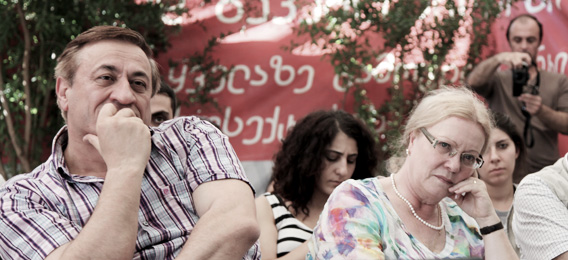

27 сентября 2012
Текали - стык границ трех южнокавказских республик
Гражданское слушание с участием жителей Баку, Еревана, Тбилиси, Марнеули, Ноемберяна, и приграничных сел.
Ассоциация «Текали», Грузия
ЕвроКавкАзия, Германия
Кавказский Центр Миротворческих Инициатив, Армения
В рамках проекта «Символический суд по правам человека» при поддержке Национального Фонда Поддержки Демократии (США)
Фото: Александр Авсанджанишвили, Михеил Мирзиашвили, Ираклий Чихладзе
Текали - стык границ трех южнокавказских республик
Гражданское слушание с участием жителей Баку, Еревана, Тбилиси, Марнеули, Ноемберяна, и приграничных сел.
Ассоциация «Текали», Грузия
ЕвроКавкАзия, Германия
Кавказский Центр Миротворческих Инициатив, Армения
В рамках проекта «Символический суд по правам человека» при поддержке Национального Фонда Поддержки Демократии (США)
Фото: Александр Авсанджанишвили, Михеил Мирзиашвили, Ираклий Чихладзе
Мушвиг Намазов
локальный организатор
локальный организатор
СОЗДАНИЕ ИНТЕРНЕТ - ПОРТАЛА МОЛОДЫХ ИСТОРИКОВ ЮЖНОГО КАВКАЗА
Ева-Мария Аух, Берлин, Германия: Спасибо за приглашение в ваше село! И я думаю, что в первую очередь надо приветствовать вас, жителей Текали: не нас, как гостей, а вас как хозяев, приветствовать за то, что вы пошли на такое доброе дело и приютили миротворцев не только Грузии, не только Азербайджана, и не только Армении, а именно миротворцев, независимо от национальности. Первое что очень важно, чтобы все чувствовали здесь в Текали, что мир не имеет национальности. Или мы вместе как люди живем, или мы вместе будем бороться за мир, или вообще мы не заслуживаем названия быть человеком. И поэтому я очень благодарна вам, что вы, вместе с Георгием, мечтаете о том, что здесь состоится новый мир, здесь будет мирная земля для разных национальностей, и я надеюсь, что мы, как немцы, тоже сможем приезжать сюда и в будущем.
Коротко хочу представить проект, который возник на основе того опыта, который мы накопили во все эти годы. Я была в Грузии, когда танки шли, я была в Баку, когда танки шли, я не из тех служащих какой-то организации, которые выдумывают себе новые проекты, чтобы тратить какие-то деньги. Я могу сказать, что все время была в этом процессе сама и очень трудно иногда, когда ты сидишь в Берлине или Бонне - не имеет значения, за границей - сочувствуешь с одной стороны, а в практическом плане очень трудно помочь. Конечно, я могу долго говорить об Азербайджане, Армении, Грузии, вообще о ситуации на Кавказе. Я, как историк, стараюсь как-то противостоять тем разным историческим версиям, которые пишутся с точки зрения национализма, но этого не достаточно. И поэтому, кроме работы в университете мы несколько лет назад создали Научно-культурный союз «ЕвроКавкАзия», и из названия видно, что мы смотрели на Кавказ как на связующее звено между Азией и Европой. И вот в рамках нашей международной организации, которая открыта для всех, не только для немцев, мы работаем в разных частях Германии. Недавно руководство переехало из Бонна в Берлин, и наши контакты сохраняются и налаживаются в разных странах. И что очень важно, представители ваших республик, которые живут в Германии, тоже участвуют в нашей работе. Это люди, которые хотят по-другому действовать и по-другому мыслить.
Во время нашего первого проекта, в Тбилиси, мы вместе сидели и говорили о тех стереотипах, которые есть в учебниках, в школьных учебниках. И можно только спросить: откуда все это? Все начинается, с университета, когда преподается определенный образ врага-соседа, когда преподают стереотипы, когда нет хорошей методологии, подхода к документам, к источникам, когда этого нет, тогда, что еще ожидать от школьного учителя? И сейчас уже выросло новое поколение, которое практически не знает о других подходах, не привыкло задавать вопросы, они фактически остаются вот в таком замкнутом круге...
Мы познакомились со студентами, с будущими историками и в Азербайджане, и в Армении. И нет никаких признаков изменений к лучшему. И мы думаем и переживаем из-за того, что будет в будущем, если следующее поколение растет только в таком духе? Ничего не знать друг о друге - это очень такая «благодатная» почва, чтобы потом не знать в кого стреляешь, и легче будешь стрелять. И поэтому мы совместно с нашими друзьями, которые тоже здесь присутствуют, стараемся что-то сделать. Тут речь идет практически о прорыве информационной блокады.
Коротко хочу представить проект, который возник на основе того опыта, который мы накопили во все эти годы. Я была в Грузии, когда танки шли, я была в Баку, когда танки шли, я не из тех служащих какой-то организации, которые выдумывают себе новые проекты, чтобы тратить какие-то деньги. Я могу сказать, что все время была в этом процессе сама и очень трудно иногда, когда ты сидишь в Берлине или Бонне - не имеет значения, за границей - сочувствуешь с одной стороны, а в практическом плане очень трудно помочь. Конечно, я могу долго говорить об Азербайджане, Армении, Грузии, вообще о ситуации на Кавказе. Я, как историк, стараюсь как-то противостоять тем разным историческим версиям, которые пишутся с точки зрения национализма, но этого не достаточно. И поэтому, кроме работы в университете мы несколько лет назад создали Научно-культурный союз «ЕвроКавкАзия», и из названия видно, что мы смотрели на Кавказ как на связующее звено между Азией и Европой. И вот в рамках нашей международной организации, которая открыта для всех, не только для немцев, мы работаем в разных частях Германии. Недавно руководство переехало из Бонна в Берлин, и наши контакты сохраняются и налаживаются в разных странах. И что очень важно, представители ваших республик, которые живут в Германии, тоже участвуют в нашей работе. Это люди, которые хотят по-другому действовать и по-другому мыслить.
Во время нашего первого проекта, в Тбилиси, мы вместе сидели и говорили о тех стереотипах, которые есть в учебниках, в школьных учебниках. И можно только спросить: откуда все это? Все начинается, с университета, когда преподается определенный образ врага-соседа, когда преподают стереотипы, когда нет хорошей методологии, подхода к документам, к источникам, когда этого нет, тогда, что еще ожидать от школьного учителя? И сейчас уже выросло новое поколение, которое практически не знает о других подходах, не привыкло задавать вопросы, они фактически остаются вот в таком замкнутом круге...
Мы познакомились со студентами, с будущими историками и в Азербайджане, и в Армении. И нет никаких признаков изменений к лучшему. И мы думаем и переживаем из-за того, что будет в будущем, если следующее поколение растет только в таком духе? Ничего не знать друг о друге - это очень такая «благодатная» почва, чтобы потом не знать в кого стреляешь, и легче будешь стрелять. И поэтому мы совместно с нашими друзьями, которые тоже здесь присутствуют, стараемся что-то сделать. Тут речь идет практически о прорыве информационной блокады.
Мы не общаемся между собой. Конечно, какая-то элита получает стипендии, гранты: они изучают, они выезжают, они изучают языки, они хорошо знают как себя вести, их приглашают на какие-то конференции. А что с массой наших молодых людей, что с ними? С нашими студентами, школьниками, что с ними? С теми, кто не имеет эту возможность открывать себе мир. Нам не понадобилась арабская какая-то революция, нам это не понадобилось, чтобы понять, что основа миротворческого процесса – расширение коммуникации, обмена между нациями. И поэтому наша совместная идея такова, что мы хотим создать совместный портал, интернет портал. Мы начали с идеи портала молодых историков, но в течение наших обсуждений мы решили расширить круг: каждый будет иметь право там присутствовать, активно принимать участие в работе этого портала. И мы приехали в Грузию сейчас, и в эти дни работали над концепцией такого интернет портала, который будет действовать именно ради поддержки разных своих участников.
Я думаю это первый такой шаг – обмен информацией. И ничего более. Вот вы идете где-то на базар, и обмениваетесь тоже - какие цены в Баку, какие цены в Ереване. Какие товары будут лучше продаваться. Это тоже обмен информацией, который очень важен для вашей ежедневной жизни. Для молодых такой вот обмен информацией необходим. Если считать, что через 100 километров ты уже не знаешь, какая книга вышла, какая конференция проводится, кто работает, какой темой интересуется – ты уже не можешь работать полноценно. Поэтому мы собрались в Тбилиси, чтобы обсудить вопросы, кого будем включать, какие темы мы хотим затрагивать, какие правила работы, на какие условия мы решимся, потому что, если каждый будет ставить туда, что хочет, мы попадем на уровень чатов – «ты плохой, ты еще хуже, а ты вообще такой.» Если поискать в интернет, есть много таких социальных сетей, но на каком уровне? Это ужас, что там происходит. Наш подход другой, мы хотим начать с молодыми, свежими силами, новыми идеями, и попутно мы конечно решили, что мы сами тоже молодые...
Модератор: Нет, нет, это они молодые, а мы - самые молодые...
Ева-Мария Аух: Да, правильно. И вот в сотрудничестве молодых и самых молодых мы предложили опыт похожих немецких порталов, и мы надеемся на поддержку не только всех присутствующих, но и, чтобы вы говорили об этом, приглашали на этот портал свое окружение, потому что портал будет жить только при активном и возможно широком участии людей. Спасибо.
Модератор: Нет, нет, это они молодые, а мы - самые молодые...
Ева-Мария Аух: Да, правильно. И вот в сотрудничестве молодых и самых молодых мы предложили опыт похожих немецких порталов, и мы надеемся на поддержку не только всех присутствующих, но и, чтобы вы говорили об этом, приглашали на этот портал свое окружение, потому что портал будет жить только при активном и возможно широком участии людей. Спасибо.

Расим Мирзаев, Берлин, Германия: Моя коллега Ева-Мария Аух, мне кажется, уже подробно сказала о проекте. Я просто хочу высказать свое пожелание и свое впечатление. Я очень взволнован своим первым приездом в Текали. И это великолепная идея, я думаю, такого человека как Георгий, идеалиста, и реалиста одновременно. Он идеалист, и 90 процентов нашего населения, населения Кавказа, его не понимают, может не совсем принимают, но в тоже время он находит такое реальное место, где люди его поддерживают, и со всех сторон. Я просто очень благодарен сельчанам здесь, я очень благодарен, что из армянских населенных пунктов едут сюда люди. Я побежал их встречать, и это общение для меня большая радость.
Я думаю, что мира добиваются, и мир-человечество спасают всегда идеалисты. Те идеалисты, которые еще и находят людей, которые поддерживают их, идут за ними, верят им. Сегодня я больше чем уверен, что Георгий и мы все вместе с ним добьемся когда-нибудь мирного демократического процветающего Кавказа. Я вижу эту модель здесь. Он гениально выбрал эту базу, основу – Текали, который сейчас уже известен миру и когда-нибудь займет свое место в истории: «вот оттуда все началось...» Я вижу этот день, я представляю, я думаю, мы все соберемся когда-нибудь снова, когда установится мир на Кавказе, и мы с вами здесь, в Текали все вместе будем праздновать этот день. Я нам всем желаю этого. Спасибо.
Вопрос от Эдиты Бадасян, «Кавказский узел»: Есть ли молодые историки с двух сторон (Армении и Азербайджана), которые согласились друг с другом работать?
Ева-Мария Аух: Это очень важный вопрос и этот вопрос, честно говоря, нас беспокоил. Какие у нас реалии? С одной стороны, есть открыто пишущие молодые люди в интернете. Умные и глубоко мыслящие молодые люди. Я знаю, что они есть, иначе не решилась бы на такое. С другой стороны есть официальная молодая элита. Мы в июне провели в Берлине такую встречу молодых ученых азербайджанцев. И результат был такой, что чувствовалось: все они хотят себя показать технократами. Они технократы – они официально носят патриотизм, как какой-то щит: вот мы такие патриоты, но в глубине они технократы и проявляют ту культуру, о которой я уже говорила. Результат был такой – блестящая конференция, все было хорошо. Но когда студенческая конференция завершается банкетом в Хилтоне, наши студенты спрашивают – извините, пожалуйста, что это за студенты? От них ожидать, что можно с ними что-то сделать, конечно, я не ожидаю.
Я думаю, что мира добиваются, и мир-человечество спасают всегда идеалисты. Те идеалисты, которые еще и находят людей, которые поддерживают их, идут за ними, верят им. Сегодня я больше чем уверен, что Георгий и мы все вместе с ним добьемся когда-нибудь мирного демократического процветающего Кавказа. Я вижу эту модель здесь. Он гениально выбрал эту базу, основу – Текали, который сейчас уже известен миру и когда-нибудь займет свое место в истории: «вот оттуда все началось...» Я вижу этот день, я представляю, я думаю, мы все соберемся когда-нибудь снова, когда установится мир на Кавказе, и мы с вами здесь, в Текали все вместе будем праздновать этот день. Я нам всем желаю этого. Спасибо.
Вопрос от Эдиты Бадасян, «Кавказский узел»: Есть ли молодые историки с двух сторон (Армении и Азербайджана), которые согласились друг с другом работать?
Ева-Мария Аух: Это очень важный вопрос и этот вопрос, честно говоря, нас беспокоил. Какие у нас реалии? С одной стороны, есть открыто пишущие молодые люди в интернете. Умные и глубоко мыслящие молодые люди. Я знаю, что они есть, иначе не решилась бы на такое. С другой стороны есть официальная молодая элита. Мы в июне провели в Берлине такую встречу молодых ученых азербайджанцев. И результат был такой, что чувствовалось: все они хотят себя показать технократами. Они технократы – они официально носят патриотизм, как какой-то щит: вот мы такие патриоты, но в глубине они технократы и проявляют ту культуру, о которой я уже говорила. Результат был такой – блестящая конференция, все было хорошо. Но когда студенческая конференция завершается банкетом в Хилтоне, наши студенты спрашивают – извините, пожалуйста, что это за студенты? От них ожидать, что можно с ними что-то сделать, конечно, я не ожидаю.
Ответ на ваш вопрос в том, что нужно иметь хороших друзей. И я очень благодарна моим друзьям, нашим друзьям, которые мне помогли. Можно считать, что через-через-через – это плохо, конечно можно относиться так. Но в этом случае по-другому делать нельзя. Как я могу найти на самом деле умных людей? Только через друзей, которые разделяют со мной мои идеалы. И в этом случае я надеюсь, что нам повезло, и этот процесс будет продолжен. Если завтра кто-то говорит, я не хочу участвовать – это тоже его право. Мы никого не заставляем быть согласными. Кто хочет, тот сможет, а если не хочет - ничего плохого в этом нет. Это личное решение.
Расим Мирзаев: Мы несколько раз в Берлине провели интересные встречи с азербайджанскими и армянскими студентами. Например, когда приезжал Ваге Аветян, армянский писатель, который живет в Швеции и наш хороший друг, мы организовали первую такую встречу. Вопросы были очень острые, ни один тяжелый вопрос не обошли. Там были и представители Карабаха. Был один радикальный такой молодой человек, которого я знал по прошлым конференциям по Карабаху. Я ему сказал, вот приходите на встречу, там будет азербайджанский представитель из Карабаха, беженец, вот приходите туда и все свои обиды, все мысли, пожалуйста, говорите, но и выслушайте других, пожалуйста. А он: нет, я вам не верю, вы - азербайджанец. Вот я - азербайджанец и мой друг Ваге Аветян – армянин, организуем для вас эту встречу. Было очень большое давление, когда мы объявили об этой встрече. Но все прошло нормально. Грамотность, толерантность друг к другу была. Интеллигентно поспорили, поговорили. Это правильный путь.
И наша молодежь, и та, что за границей и здесь - среди них есть нормальные, думающие люди и понимают что это абсурд – Кавказ, в котором мы живем. Это не нормально, никогда не может быть нормальным, то, как мы живем на Кавказе. И у этого нет будущего. Ни один нормальный человек не хочет, чтобы его дети жили в этом страшном, ужасном Кавказе. Так что такие молодые люди есть среди нас. Мы работали вместе вчера в рабочих группах. В личном общении появляются наши перспективы.
Модератор: Еще раз хочу сказать, что это проект для всех. И как координатор по приграничью, хочу представить вам учителя истории средней школы Текали и учителя истории соседнего Бердавана. Обещаю восполнить треугольник – и пригласить учителя истории из Шихли. И думаю, что наши немецкие коллеги могут начать свои апробации в этих трех школах. Есть также идея Текалинского университета. Так что будем считать, что сегодня мы уже приступаем к его основанию. Тема нашего гражданского слушания «Культурное наследие СССР в межнациональных отношениях: ресурс или препятствие для Текалинского процесса?» и я передаю слово первому докладчику.
Расим Мирзаев: Мы несколько раз в Берлине провели интересные встречи с азербайджанскими и армянскими студентами. Например, когда приезжал Ваге Аветян, армянский писатель, который живет в Швеции и наш хороший друг, мы организовали первую такую встречу. Вопросы были очень острые, ни один тяжелый вопрос не обошли. Там были и представители Карабаха. Был один радикальный такой молодой человек, которого я знал по прошлым конференциям по Карабаху. Я ему сказал, вот приходите на встречу, там будет азербайджанский представитель из Карабаха, беженец, вот приходите туда и все свои обиды, все мысли, пожалуйста, говорите, но и выслушайте других, пожалуйста. А он: нет, я вам не верю, вы - азербайджанец. Вот я - азербайджанец и мой друг Ваге Аветян – армянин, организуем для вас эту встречу. Было очень большое давление, когда мы объявили об этой встрече. Но все прошло нормально. Грамотность, толерантность друг к другу была. Интеллигентно поспорили, поговорили. Это правильный путь.
И наша молодежь, и та, что за границей и здесь - среди них есть нормальные, думающие люди и понимают что это абсурд – Кавказ, в котором мы живем. Это не нормально, никогда не может быть нормальным, то, как мы живем на Кавказе. И у этого нет будущего. Ни один нормальный человек не хочет, чтобы его дети жили в этом страшном, ужасном Кавказе. Так что такие молодые люди есть среди нас. Мы работали вместе вчера в рабочих группах. В личном общении появляются наши перспективы.
Модератор: Еще раз хочу сказать, что это проект для всех. И как координатор по приграничью, хочу представить вам учителя истории средней школы Текали и учителя истории соседнего Бердавана. Обещаю восполнить треугольник – и пригласить учителя истории из Шихли. И думаю, что наши немецкие коллеги могут начать свои апробации в этих трех школах. Есть также идея Текалинского университета. Так что будем считать, что сегодня мы уже приступаем к его основанию. Тема нашего гражданского слушания «Культурное наследие СССР в межнациональных отношениях: ресурс или препятствие для Текалинского процесса?» и я передаю слово первому докладчику.
КУЛЬТУРНОЕ НАСЛЕДИЕ СССР В МЕЖНАЦИОНАЛЬНЫХ ОТНОШЕНИЯХ: РЕСУРС ИЛИ ПРЕПЯТСТВИЕ ДЛЯ ТЕКАЛИНСКОГО ПРОЦЕССА?
Луиза Погосян, Ереван, Армения: Дорогие текалинцы, мы возьмем культурное наследие в СССР в межнациональных отношениях и попробуем приложить его к текалинскому процессу, к тому, что происходит на наших встречах здесь и к тому, что происходит между нашими встречами. Есть такой ораторский прием, он часто применялся и применяется советскими заслуженными деятелями культуры: деятель культуры рассказывает о каком-нибудь национальном уже покойном деятеле культуры. И он говорит, что ему говорить об этом человеке и грустно и радостно. Грустно потому, что у этого выдающегося человека были очень большие жизненные трудности. Он жил в нищете, его не ценили и потеряли мы его преждевременно. И радостно потому, что в этой нашей хорошей процветающей стране он обессмертил себя, в солнце - его душа, и в травинке - его душа, и вообще он ходит среди нас и во всем ощущается его присутствие.
Я тоже применю подобное маразматическое противопоставление, и скажу, что с одной стороны правила слушания таковы, что я буду выступать с максималистской позицией и утрировать, чтобы получились дебаты, но с другой стороны, я буду говорить, что думаю, искренне. Так что смотрите на мой доклад с любой удобной для вас стороны. И прежде чем начать я хочу попросить каждого из присутствующих вспомнить о том, что в каждом человеке есть плохое и хорошее, у каждого на одном плече ангел, на другом черт, о том, что в течение жизни мы делаем и благое и злое. И еще будем делать. Хочу также отметить, что все мои аргументы – это результат самоанализа, результат моих наблюдений, также я воспользуюсь в своем докладе, и уже воспользовалась, кстати, в самом начале, мыслями и мнениями людей, с которыми я общалась, многие из которых сегодня здесь. Заранее признаюсь в плагиате, и уже не буду цитировать какую мысль, у кого я взяла.
Итак, я считаю, что культурное наследие СССР в межнациональных отношениях является препятствием для Текалинского процесса, для любого процесса, который направлен на примирение народов, живущих на Южном Кавказе, и региональную интеграцию. Я считаю, что это препятствие подлежит немедленному программному, продуманному уничтожению.
Мое поколение, это поколение людей, у которых не только родители, но и бабушки и дедушки провели свою сознательную жизнь, сформировали свою культуру и мировоззрение при советском режиме. Я сама советский человек в третьем поколении, можно сказать, абсолютно советский человек. Мы сейчас носим культуру, которая настолько влиятельна, что трудно предсказать при каких обстоятельствах она может исчезнуть естественным путем.
Последние 20 лет показали, что советская культура выдержала не ре-, а де- формацию, превратилась в то, что мы условно называем своей национальной культурой, то есть этот пережиток, который мы назвали наследием, не только не вымирает, но и культивируется, и есть система передачи ее следующему поколению.
Я думаю, не надо было ждать 20 лет, чтобы понять, что СССР было клептократическим обществом. Известно также, о том, что оно было тотально бюрократизировано, то есть не только государственная система, но и все аспекты жизни. Из этого следует, что советский человек был несуном (вором) и приписчиком (подделывал документы). Делал это каждый из нас – я так думаю, но, смягчу это утверждение, и скажу, что каждый уж точно был свидетелем воровства и подделки. Для молодых надо объяснить, о каком воровстве идет речь. Сидит инженер у себя в кабинете, и смотрит на государственную полку, полку, купленную из госбюджета, и представляет, как бы она хорошо смотрелась у него на балконе. И если у него хорошие отношения с начальством, в один прекрасный день эта полка оказывается у него на балконе. На самом деле эта полка не настолько улучшила его жизнь. Это было культурной особенностью советского человека. Такие люди назывались несунами. Частная собственность не была узаконена, но у каждого человека было ощущение своего, того своего, которое надо было утащить у государства. В психологическом плане это можно считать разновидностью клептомании. В этическом плане несун не считался вором, это была этическая норма. Что значит приписчик, то есть поддельщик документов, не надо объяснять, бюрократия знакома всем, и чем она больше, тем более расширенно и более изобретательно идет против нее борьба.
В публичной жизни этот наш советский человек был легко произносящим и пишущим ложь человеком. То есть он легко врал. Форма этой лжи – демагогия. Если в бухгалтерии приписывали цифры, в гуманитарной жизни использовалась демагогия, для того, чтобы врать и замалчивать. Это было нормой, культурной нормой.
И что случилось с этим человеком, с этим лгуном, вором и поддельщиком, когда он попал в конфликт? Ему стало неуютно в социальном плане – голодно, холодно – и плюс еще человек попал в этническую вражду. Естественно, что культурная норма несунства превратилась в мародерство, в мародерство и разграбление своих, ближних. А культурная норма публичной лжи, культурная норма говорить необоснованные вещи и не отвечать за свои слова, говорить по моменту что-то и потом не мучиться, что ты это сказал, эта культура преобразилась в культуру провокации, дезинформации. Это стоило человеческих жизней. Советский человек стал опасным преступником. Эти безобидные клептоманы и безобидные демагоги, которые органично вписывались в советскую жизнь, в экстремальных условиях дорого обошлись тому обществу, которое породило этот тип человека.
Я тоже применю подобное маразматическое противопоставление, и скажу, что с одной стороны правила слушания таковы, что я буду выступать с максималистской позицией и утрировать, чтобы получились дебаты, но с другой стороны, я буду говорить, что думаю, искренне. Так что смотрите на мой доклад с любой удобной для вас стороны. И прежде чем начать я хочу попросить каждого из присутствующих вспомнить о том, что в каждом человеке есть плохое и хорошее, у каждого на одном плече ангел, на другом черт, о том, что в течение жизни мы делаем и благое и злое. И еще будем делать. Хочу также отметить, что все мои аргументы – это результат самоанализа, результат моих наблюдений, также я воспользуюсь в своем докладе, и уже воспользовалась, кстати, в самом начале, мыслями и мнениями людей, с которыми я общалась, многие из которых сегодня здесь. Заранее признаюсь в плагиате, и уже не буду цитировать какую мысль, у кого я взяла.
Итак, я считаю, что культурное наследие СССР в межнациональных отношениях является препятствием для Текалинского процесса, для любого процесса, который направлен на примирение народов, живущих на Южном Кавказе, и региональную интеграцию. Я считаю, что это препятствие подлежит немедленному программному, продуманному уничтожению.
Мое поколение, это поколение людей, у которых не только родители, но и бабушки и дедушки провели свою сознательную жизнь, сформировали свою культуру и мировоззрение при советском режиме. Я сама советский человек в третьем поколении, можно сказать, абсолютно советский человек. Мы сейчас носим культуру, которая настолько влиятельна, что трудно предсказать при каких обстоятельствах она может исчезнуть естественным путем.
Последние 20 лет показали, что советская культура выдержала не ре-, а де- формацию, превратилась в то, что мы условно называем своей национальной культурой, то есть этот пережиток, который мы назвали наследием, не только не вымирает, но и культивируется, и есть система передачи ее следующему поколению.
Я думаю, не надо было ждать 20 лет, чтобы понять, что СССР было клептократическим обществом. Известно также, о том, что оно было тотально бюрократизировано, то есть не только государственная система, но и все аспекты жизни. Из этого следует, что советский человек был несуном (вором) и приписчиком (подделывал документы). Делал это каждый из нас – я так думаю, но, смягчу это утверждение, и скажу, что каждый уж точно был свидетелем воровства и подделки. Для молодых надо объяснить, о каком воровстве идет речь. Сидит инженер у себя в кабинете, и смотрит на государственную полку, полку, купленную из госбюджета, и представляет, как бы она хорошо смотрелась у него на балконе. И если у него хорошие отношения с начальством, в один прекрасный день эта полка оказывается у него на балконе. На самом деле эта полка не настолько улучшила его жизнь. Это было культурной особенностью советского человека. Такие люди назывались несунами. Частная собственность не была узаконена, но у каждого человека было ощущение своего, того своего, которое надо было утащить у государства. В психологическом плане это можно считать разновидностью клептомании. В этическом плане несун не считался вором, это была этическая норма. Что значит приписчик, то есть поддельщик документов, не надо объяснять, бюрократия знакома всем, и чем она больше, тем более расширенно и более изобретательно идет против нее борьба.
В публичной жизни этот наш советский человек был легко произносящим и пишущим ложь человеком. То есть он легко врал. Форма этой лжи – демагогия. Если в бухгалтерии приписывали цифры, в гуманитарной жизни использовалась демагогия, для того, чтобы врать и замалчивать. Это было нормой, культурной нормой.
И что случилось с этим человеком, с этим лгуном, вором и поддельщиком, когда он попал в конфликт? Ему стало неуютно в социальном плане – голодно, холодно – и плюс еще человек попал в этническую вражду. Естественно, что культурная норма несунства превратилась в мародерство, в мародерство и разграбление своих, ближних. А культурная норма публичной лжи, культурная норма говорить необоснованные вещи и не отвечать за свои слова, говорить по моменту что-то и потом не мучиться, что ты это сказал, эта культура преобразилась в культуру провокации, дезинформации. Это стоило человеческих жизней. Советский человек стал опасным преступником. Эти безобидные клептоманы и безобидные демагоги, которые органично вписывались в советскую жизнь, в экстремальных условиях дорого обошлись тому обществу, которое породило этот тип человека.

Как же выразила себя советская культура в другом конфликте, в своеобразном столкновении цивилизаций – западной и советско-кавказской, в грантовой сфере, в сфере предоставления получения и реализации грантовых проектов, в сфере, в которой и фактически возник текалинский процесс?
Не надо ждать 20 лет, чтобы предположить, что может случиться, если к этому, уже деформированному конфликтом советскому человеку, придет западный грантодатель. Этот человек очень успешно употребил закаленное в недавней войне «наследие» в своем «столкновении с западной цивилизацией». Без особых усилий западная грантовая система была адаптирована на советском Кавказе. Клептомания и демагогия вернулись на свои позиции в культуре взаимоотношений между грантодателями и грантополучателями. Kаждый, работающий в этой сфере, в какой-то степени клептоман и демагог. Я сама этим страдала и продолжаю страдать, демагогией и клептоманией. Это неизбежно. Для того, чтобы освободиться от этого, нужно обойти не только финансовый, но и идеологический бюрократизм, который требует постановки задач и результатов, далеких от реальности. Я, честно говоря, не знаю, является ли это все проблемой адаптации на постсоветском пространстве. Возможно, что это изначально заложено в культуре международного сообщества в грантовой сфере. Не знаю. Могу с уверенностью говорить только о нашей, армянской среде. Могу делать предположения обо всем Южном Кавказе. В данном случае это не важно. Важно то, что в течение 20 лет наша клептомания и демагогия являются препятствием для целевого использования наших грантов. Являются препятствием для того, чтобы получать реальный эффект, реальную пользу для всех.
Еще об одном элементе советского наследия, которое, подлежит вымиранию в первую очередь - кухонное диссидентство. В советской жизни люди выражали себя только на кухне. У тебя есть 10 квадратных метров кухни и там ты выражаешь себя, критикуешь действительность, занимаешься самобичеванием, доходишь до кульминации протеста, сопровождая все это распитием спиртных напитков... Утром просыпаешься и выходишь опять в свое общество, гармонично вписываясь в него – до следующего кухонного ритуала. И вот эта культура «кухонного жречества», очень плавно перешла в грантовые проекты, в том числе проекты, касающиеся конфликта, межнациональных отношений, в проекты региональные. Эта кухня перешла в кулуары проектов в их банкетную составляющую проектов. То есть весь интеллектуальный потенциал, он расходуется не на самом проекте, а в процессе общения вне проекта.
И у меня такой вопрос, можем ли мы сознательно, насилуя себя, отказаться от кухонного диссидентства как от вредной привычки? Можем ли мы придумать собственную модель избавления от этого?
Cегодня, в результате «столкновения с западной культурой», мы имеем не культурный обмен, не адаптированные программы, а адаптированных людей. За 20 лет, я думаю, именно эти адаптированные люди привели к снижению рейтинга Запада в наших странах, к созданию новых стереотипов в отношении общечеловеческих ценностей, правозащиты. Есть негативные стереотипы и в отношении научной деятельности и ее результатов. Особенно тех наук, которые не были в широком потреблении в советские годы – социологии и психологии. Те люди, которые должны были стать мостами, внедрителями всего нового, они своим приспособленчеством привели к негативу и неприятию.
Формализм, низкооплачиваемый труд в грантовой сфере социально-культурных проектов, в сфере, которая должна была освободить нас от советского культурного наследия и привести к общечеловеческим ценностям, - приводит даже умных людей к демагогии, потому что ею легче всего заниматься. Отсутствие анализа, реальной оценки, отсутствие здоровой конкуренции, создает тепличные благоприятные условия для культивирования советского наследия. И это не проблема Запада, эта наша проблема. Проблема тех, кто берет и реализует гранты. Если бы ломка системы, а не приспосабливание стало бы целью для нескольких человек, работающих в этой сфере, я думаю, можно было бы достичь успеха.
Тему столкновения цивилизаций хочу завершить притчей - анекдотом. Военнопленные второй мировой войны строили в Армении многие объекты. И вот на одной такой стройке немец военнопленный взял большой камень и размножил голову армянина, своего сотоварища по каторге. И вот он на допросе, перед трибуналом, и его спрашивают: Зачем ты его убил? Немец отвечает: Я пережил многое, я воевал, провел несколько лет в окопах, потом плен, мучения, которые трудно описать... но он, этот человек, так плохо работал, что я потерял самообладание.☺
Правда, сейчас времена другие, но немцы еще могут потерять самообладание.
Не надо ждать 20 лет, чтобы предположить, что может случиться, если к этому, уже деформированному конфликтом советскому человеку, придет западный грантодатель. Этот человек очень успешно употребил закаленное в недавней войне «наследие» в своем «столкновении с западной цивилизацией». Без особых усилий западная грантовая система была адаптирована на советском Кавказе. Клептомания и демагогия вернулись на свои позиции в культуре взаимоотношений между грантодателями и грантополучателями. Kаждый, работающий в этой сфере, в какой-то степени клептоман и демагог. Я сама этим страдала и продолжаю страдать, демагогией и клептоманией. Это неизбежно. Для того, чтобы освободиться от этого, нужно обойти не только финансовый, но и идеологический бюрократизм, который требует постановки задач и результатов, далеких от реальности. Я, честно говоря, не знаю, является ли это все проблемой адаптации на постсоветском пространстве. Возможно, что это изначально заложено в культуре международного сообщества в грантовой сфере. Не знаю. Могу с уверенностью говорить только о нашей, армянской среде. Могу делать предположения обо всем Южном Кавказе. В данном случае это не важно. Важно то, что в течение 20 лет наша клептомания и демагогия являются препятствием для целевого использования наших грантов. Являются препятствием для того, чтобы получать реальный эффект, реальную пользу для всех.
Еще об одном элементе советского наследия, которое, подлежит вымиранию в первую очередь - кухонное диссидентство. В советской жизни люди выражали себя только на кухне. У тебя есть 10 квадратных метров кухни и там ты выражаешь себя, критикуешь действительность, занимаешься самобичеванием, доходишь до кульминации протеста, сопровождая все это распитием спиртных напитков... Утром просыпаешься и выходишь опять в свое общество, гармонично вписываясь в него – до следующего кухонного ритуала. И вот эта культура «кухонного жречества», очень плавно перешла в грантовые проекты, в том числе проекты, касающиеся конфликта, межнациональных отношений, в проекты региональные. Эта кухня перешла в кулуары проектов в их банкетную составляющую проектов. То есть весь интеллектуальный потенциал, он расходуется не на самом проекте, а в процессе общения вне проекта.
И у меня такой вопрос, можем ли мы сознательно, насилуя себя, отказаться от кухонного диссидентства как от вредной привычки? Можем ли мы придумать собственную модель избавления от этого?
Cегодня, в результате «столкновения с западной культурой», мы имеем не культурный обмен, не адаптированные программы, а адаптированных людей. За 20 лет, я думаю, именно эти адаптированные люди привели к снижению рейтинга Запада в наших странах, к созданию новых стереотипов в отношении общечеловеческих ценностей, правозащиты. Есть негативные стереотипы и в отношении научной деятельности и ее результатов. Особенно тех наук, которые не были в широком потреблении в советские годы – социологии и психологии. Те люди, которые должны были стать мостами, внедрителями всего нового, они своим приспособленчеством привели к негативу и неприятию.
Формализм, низкооплачиваемый труд в грантовой сфере социально-культурных проектов, в сфере, которая должна была освободить нас от советского культурного наследия и привести к общечеловеческим ценностям, - приводит даже умных людей к демагогии, потому что ею легче всего заниматься. Отсутствие анализа, реальной оценки, отсутствие здоровой конкуренции, создает тепличные благоприятные условия для культивирования советского наследия. И это не проблема Запада, эта наша проблема. Проблема тех, кто берет и реализует гранты. Если бы ломка системы, а не приспосабливание стало бы целью для нескольких человек, работающих в этой сфере, я думаю, можно было бы достичь успеха.
Тему столкновения цивилизаций хочу завершить притчей - анекдотом. Военнопленные второй мировой войны строили в Армении многие объекты. И вот на одной такой стройке немец военнопленный взял большой камень и размножил голову армянина, своего сотоварища по каторге. И вот он на допросе, перед трибуналом, и его спрашивают: Зачем ты его убил? Немец отвечает: Я пережил многое, я воевал, провел несколько лет в окопах, потом плен, мучения, которые трудно описать... но он, этот человек, так плохо работал, что я потерял самообладание.☺
Правда, сейчас времена другие, но немцы еще могут потерять самообладание.
Можно конечно подождать. Например, подождать пока сменится три поколения. Можем ли мы считать, что через три поколения культурное наследие СССР исчезнет само собой? Можем ли мы гарантировать, что в процессе этого ожидания другие не потеряют самообладание? Каждый из нас, лично, может убежать. Но общество вымрет, у него не будет шанса стать нацией, стать государством, у него даже не будет шанса зафиксировать свою смерть.
И в конце, постараюсь коротко, о наследованных нами стереотипах дружбы и вражды. Эти стереотипы часть нашей сегодняшней идеологии, идеологии национализма, выращенного в пробирке. То есть, за счет каких-то катализаторов этот национализм вырос, он очень похож на национализм, но он не настолько жизнеспособен, каким мог бы быть, если бы рос в натуральной среде. В СССР межнациональные отношения отожествлялись с дружбой и братством. То есть, как таковых отношений, общения не было. На чем строились дружба и братство? На одинаковости. То есть, мы одинаково в той или иной степени русскоязычны, мы одинаково говорим с акцентом, мы одинаковы тем, что читаем (должны читать) те же книги, смотрим (должны смотреть) те же фильмы, смеемся над теми же анекдотами, мы одинаково не верующие – и эта одинаковость помогает нам "дружить". Этот упор на одинаковость, прикрывал и уничтожал естественную для каждого из народов этику общения. Естественное многообразие замалчивалось, вуалировалось.
Сегодня, при нашем возращении к себе, при жизни, которая заставляет нас возвратиться к себе, наши общества становятся все более закрытыми, своеобразными, на одинаковости уже, грубо говоря, трудно выезжать. Но мы пока продолжаем «играть» в некую деформированную советскую дружбу. Советская одинаковость, одинаковость как ценность, настолько глубоко сидит, что все, что делают другие по-другому - вызывает обычно враждебность. Мы не смиряемся когда видим непохожесть даже в мелочах, она нас раздражает. Какой неприятный язык (!) этот грузинский - говорят советские армяне, приезжая сегодня в Грузию.
Сегодняшняя наша идеология мира и идеология войны - порождение советской интеллигенции, которая учит, как людям надо дружить и как им надо воевать. Идеология мира и идеология войны - едины в своей одинаковости. И миротворцы, и агитаторы вражды одинаковы в положительных и отрицательных примерах, которые они приводят в качестве аргумента. Оба они способны рассуждать о прошлой советской дружбе, которая выражалась как в человеческих подвигах – спасение жизни, например, так и спасением от государства-врага (спас от ГАИ, не настучал когда крал и т.п.). Просто одни (миротворцы) считают это всеобщим правилом, и все негативное сбрасывают на власть, а другие (воители)- исключением, имеющим место «вопреки национальным установкам». Работа гражданского сектора построена на математике – увеличить объем миролюбивости и списать зверства, прошлые, сегодняшние и будущие- на власти. Работа агитаторов вражды, наоборот, увеличить и превратить в культ эти зверства, обесценить возможность человечности в отношениях с врагом. Вокруг этих образцов демагогии строится миролюбивая политика и враждолюбивая политика наших властей. Возникает вопрос, допустим, был добрый человек спас ребенка. Был злой, обкурился, мучил пленных детей. И что? Разные трактовки этого не дают нам оценки того, что сегодня происходит. И не дают нам восприятия реальности.
Люди будут всегда влюбляться друг в друга, и издеваться друг над другом. Так показывает жизненный опыт. Этническое различие может притягивать и отталкивать. Различие привлекательно для любви и возвеличивания, и для унижения и ненависти. Каким боком примыкает к этому гражданское миротворчество?
На Южнокавказский фестиваль в Карсе приехал очень активный молодой человек из Гюмри. Он решил прямо на месте снять совместный с турком короткометражный фильм. Нашел оператора-турка. Тот не отказался. Фильм в итоге получился «проармянским», режиссер армянин сделал его таким, но у оператора-турка - другое восприятие, другая культура, и его абсолютно не волнует "прормянскость" или "протурецкость" чего бы то ни было. Он просто делал съемку. Вот другой пример. Армянин и азербайджанец делают вместе фильм. И вот как они по-советски дружат в этом проекте. Армянин говорит азербайджанцу – дорогой, давай сделаем так, чтобы если даже твоя фамилия там, тебе бы в Баку плохо не было. Давай продумаем все так, чтобы тебе тоже в Ереване плохо не было. В результате мы имеем дружбу народов и пустой фильм. И в проекте, который направлен на разрешение конфликта и примирение мы принимаем психологию «прятать друга от ГАИ». На самом деле прячемся от примирения, прячемся от сенситивных вопросов - вместе.
И напоследок вернусь к началу - несколько слов об актуализации прошлого в советской манере. Ленин жил. Ленин жив. Ленин будет жить. Допустим, и будем верить, что погибли лучшие из лучших, или примем, что есть на войне плохое и есть хорошее. Не имеет значения. Тот человек, который воевал в Карабахе и погиб он не знает, что случилось с нами за эти 20 лет, и он никак не может одобрить того или иного поступка. Потому что он остался в прошлом. Но мы актуализируем этих людей, используем тех, кто уже не может отвечать на наши вопросы, говорить, что нам надо делать сегодня.
И в конце, постараюсь коротко, о наследованных нами стереотипах дружбы и вражды. Эти стереотипы часть нашей сегодняшней идеологии, идеологии национализма, выращенного в пробирке. То есть, за счет каких-то катализаторов этот национализм вырос, он очень похож на национализм, но он не настолько жизнеспособен, каким мог бы быть, если бы рос в натуральной среде. В СССР межнациональные отношения отожествлялись с дружбой и братством. То есть, как таковых отношений, общения не было. На чем строились дружба и братство? На одинаковости. То есть, мы одинаково в той или иной степени русскоязычны, мы одинаково говорим с акцентом, мы одинаковы тем, что читаем (должны читать) те же книги, смотрим (должны смотреть) те же фильмы, смеемся над теми же анекдотами, мы одинаково не верующие – и эта одинаковость помогает нам "дружить". Этот упор на одинаковость, прикрывал и уничтожал естественную для каждого из народов этику общения. Естественное многообразие замалчивалось, вуалировалось.
Сегодня, при нашем возращении к себе, при жизни, которая заставляет нас возвратиться к себе, наши общества становятся все более закрытыми, своеобразными, на одинаковости уже, грубо говоря, трудно выезжать. Но мы пока продолжаем «играть» в некую деформированную советскую дружбу. Советская одинаковость, одинаковость как ценность, настолько глубоко сидит, что все, что делают другие по-другому - вызывает обычно враждебность. Мы не смиряемся когда видим непохожесть даже в мелочах, она нас раздражает. Какой неприятный язык (!) этот грузинский - говорят советские армяне, приезжая сегодня в Грузию.
Сегодняшняя наша идеология мира и идеология войны - порождение советской интеллигенции, которая учит, как людям надо дружить и как им надо воевать. Идеология мира и идеология войны - едины в своей одинаковости. И миротворцы, и агитаторы вражды одинаковы в положительных и отрицательных примерах, которые они приводят в качестве аргумента. Оба они способны рассуждать о прошлой советской дружбе, которая выражалась как в человеческих подвигах – спасение жизни, например, так и спасением от государства-врага (спас от ГАИ, не настучал когда крал и т.п.). Просто одни (миротворцы) считают это всеобщим правилом, и все негативное сбрасывают на власть, а другие (воители)- исключением, имеющим место «вопреки национальным установкам». Работа гражданского сектора построена на математике – увеличить объем миролюбивости и списать зверства, прошлые, сегодняшние и будущие- на власти. Работа агитаторов вражды, наоборот, увеличить и превратить в культ эти зверства, обесценить возможность человечности в отношениях с врагом. Вокруг этих образцов демагогии строится миролюбивая политика и враждолюбивая политика наших властей. Возникает вопрос, допустим, был добрый человек спас ребенка. Был злой, обкурился, мучил пленных детей. И что? Разные трактовки этого не дают нам оценки того, что сегодня происходит. И не дают нам восприятия реальности.
Люди будут всегда влюбляться друг в друга, и издеваться друг над другом. Так показывает жизненный опыт. Этническое различие может притягивать и отталкивать. Различие привлекательно для любви и возвеличивания, и для унижения и ненависти. Каким боком примыкает к этому гражданское миротворчество?
На Южнокавказский фестиваль в Карсе приехал очень активный молодой человек из Гюмри. Он решил прямо на месте снять совместный с турком короткометражный фильм. Нашел оператора-турка. Тот не отказался. Фильм в итоге получился «проармянским», режиссер армянин сделал его таким, но у оператора-турка - другое восприятие, другая культура, и его абсолютно не волнует "прормянскость" или "протурецкость" чего бы то ни было. Он просто делал съемку. Вот другой пример. Армянин и азербайджанец делают вместе фильм. И вот как они по-советски дружат в этом проекте. Армянин говорит азербайджанцу – дорогой, давай сделаем так, чтобы если даже твоя фамилия там, тебе бы в Баку плохо не было. Давай продумаем все так, чтобы тебе тоже в Ереване плохо не было. В результате мы имеем дружбу народов и пустой фильм. И в проекте, который направлен на разрешение конфликта и примирение мы принимаем психологию «прятать друга от ГАИ». На самом деле прячемся от примирения, прячемся от сенситивных вопросов - вместе.
И напоследок вернусь к началу - несколько слов об актуализации прошлого в советской манере. Ленин жил. Ленин жив. Ленин будет жить. Допустим, и будем верить, что погибли лучшие из лучших, или примем, что есть на войне плохое и есть хорошее. Не имеет значения. Тот человек, который воевал в Карабахе и погиб он не знает, что случилось с нами за эти 20 лет, и он никак не может одобрить того или иного поступка. Потому что он остался в прошлом. Но мы актуализируем этих людей, используем тех, кто уже не может отвечать на наши вопросы, говорить, что нам надо делать сегодня.
Примирение из века в век основывалось на вере в человека. На вере, что люди не хотят быть убийцами или убитыми. И так было всегда. И сегодня они, люди, хотят воплотить в жизнь это свое желание – иметь кусок хлеба, не убивая. Люди всегда думают, что это возможно. Сегодня культ, средневековый культ войны – конкурирует с техническим прогрессом. И если ты общественный деятель – ты должен определиться. Догматический гуманизм – есть даже в древних эпосах, помогло ли нам это? Я не призываю складывать костры из книг. Но догматизм может убить текалинский процесс. Этот догматизм смертельно опасен для текалинского процесса.
Если мы жили мирно в советское время, то можем жить мирно и сейчас. Нет, не можем, пока не освободились от советского наследия в межнациональных отношениях. Благодарю за внимание.
Русико Маршания, Тбилиси, Грузия: У меня не вопрос, а комментарий. Мне очень понравилось замечание насчет актуализации мертвых героев. Я просто хотела бы провести аналогии наших конфликтных регионов. Очень актуально это и в Абхазии. Может быть, в Грузии не настолько. В Грузии эта актуализация мертвых героев была сразу после войны, в Абхазии это актуально до сих пор. Вот мне кажется, это тоже какая-то часть советского наследия, как ты сказала. Я, честно говоря, до этого не задумывалась об этом. Актуализация мертвых героев используется для того, чтобы поднимать дух, боевой дух общества, чтобы не дать ему возможность пойти на какие-то уступки противнику и чтобы в какой-то степени оправдать действия властей в тот период: что жертвы были не напрасны. Потому что на Кавказе такие ошибки не прощаются. Вот мне кажется, что вот эту тему стоит более глубоко развивать в плане конфликта. Потому что, да, - она очень актуальна в плане грузино-осетинского и грузино-абхазского конфликта тоже, не только армяно-азербайджанского.
Ева Мария Аух: Я вам очень благодарна за постановку этого вопроса и комментарий, потому что у нас в университете есть такой интердисциплинарный проект – смерть, умирание на Кавказе. И этот акцент очень важный элемент в этом проекте. Я просто могу пригласить принять участие в этом проекте и я очень рада, что вы поддерживаете эту идею, потому что когда несколько лет тому назад возникла идея подготовить этот проект, все сказали: ну что с мертвыми, какую актуальность это может иметь? Если ты говоришь о смерти, о мертвых, конечно, это неудобно, как-то не хочется человеку этим заниматься, и с другой стороны, никто не понял актуальность этого вопроса. Я вам очень благодарна, что вы ее отметили.
Александр Авсанджанишвили, Тбилиси, Грузия: У меня вопрос. Луиза провела параллель, что многие погрешности, в частности грантожерство, откаты и прочее, – это наследие советского режима. Я придерживаюсь немножко другого мнения, и просто для иллюстрации, вопрос: Наши нпошники отличаются от западных? и второй вопрос – есть ли сходство в их отрицательных проявлениях?
Луиза Погосян: У меня нет представления о том, как там у них на Западе. Если речь идет не о западном грантодателе, который привозит деньги на Кавказ, а о западном нпошнике, человеке, который занимается правозащитой, сиротами и т.д в своей стране. У меня есть представление об этом только по фильмам. Но могу предположить, что это там не культурная норма.
Георгий Ванян: Я был в поездке по изучению деятельности НПО в США, знаю немного и том, как работают НПО в Европе. И с уверенностью могу сказать – они не такие. Но те американские НПО, и те европейские НПО, которые работают на Южном Кавказе, даже не половина, большинство – очень быстро трансформируются и превращаются в армянскую, грузинскую или азербайджанскую НПО, нормальные организации, приехав на Кавказ, начинают диктовать свои условия, у них ничего не получается, они или приспосабливаются к этой ситуации, или уезжают. В этом плане подавляющее большинство международных НПО, представленных в Армении, я только по Армении буду говорить, в таком вот плачевном состоянии.
Вагиф Абасов, Баку, Азербайджан: У меня комментарий. С одной стороны мне это выступление немножко напомнило такую известную декларацию Караганова-Федотова, общественной палаты Российской Федерации, по которой надо только извиняться, только каяться, только биться головой о стенку и все. Что вот ничего, ничего положительного не было. Естественно я не могу не сказать о том, что моя семья и семьи многих моих знакомых не были ни ворами, ни несунами никогда, и наконец, много других примеров можно привести. И третье, то, что я себя чувствую миротворцем и нахожусь здесь, это именно и именно потому, что я получил образование в советской школе. Вот это я хотел заметить. Спасибо.
Расим Мирзаев: Я тоже бы хотел отметить, что те люди, и ты сама, которые жили в советское время, у них был культ порядочности, культ образованного человека, порядочного человека. Даже не образованные и непорядочные люди, они не могли не признать это, и они старались показать себя порядочными. А сейчас же, наоборот, свою сволочность, свою поганность выставляют на показ. Вот мы имеем миллиарды, и нас не интересует мораль мелких людей. И второе о наших западных НПО. Мы же тоже говорили. Не только эти международные неправительственные организации, но и европейские официальные структуры – мы видим, как они здесь работают. Мы знаем. Даже среди них более или менее строгими считаются немцы, как я себе представляю, даже эти организации, мы знаем прекрасно, как они работают на Кавказе.
Луиза Погосян: А как эти же фонды работают у себя, внутри страны?
Расим Мирзаев: Внутри я такого не вижу. Конечно, есть такая вещь, чтобы делать видимость работы. Но до такой степени они не доходят. Вот, например, большая трагедия американцев, 11 сентября, многие американцы делали частные пожертвования, и представляете, там создана уйма фондов помощи жертвам, и за эти годы, как я читал, нашелся только один, единственный, который собрал 20 миллионов и удрал. Такое везде может произойти. Но это не тенденция там, и мы должны понять разницу.
Модератор: У нас тоже это не тенденция, это программный, системный подход. На этой оптимистической ноте передаю слово второму докладчику - Михеилу Мирзиашвили.
Если мы жили мирно в советское время, то можем жить мирно и сейчас. Нет, не можем, пока не освободились от советского наследия в межнациональных отношениях. Благодарю за внимание.
Русико Маршания, Тбилиси, Грузия: У меня не вопрос, а комментарий. Мне очень понравилось замечание насчет актуализации мертвых героев. Я просто хотела бы провести аналогии наших конфликтных регионов. Очень актуально это и в Абхазии. Может быть, в Грузии не настолько. В Грузии эта актуализация мертвых героев была сразу после войны, в Абхазии это актуально до сих пор. Вот мне кажется, это тоже какая-то часть советского наследия, как ты сказала. Я, честно говоря, до этого не задумывалась об этом. Актуализация мертвых героев используется для того, чтобы поднимать дух, боевой дух общества, чтобы не дать ему возможность пойти на какие-то уступки противнику и чтобы в какой-то степени оправдать действия властей в тот период: что жертвы были не напрасны. Потому что на Кавказе такие ошибки не прощаются. Вот мне кажется, что вот эту тему стоит более глубоко развивать в плане конфликта. Потому что, да, - она очень актуальна в плане грузино-осетинского и грузино-абхазского конфликта тоже, не только армяно-азербайджанского.
Ева Мария Аух: Я вам очень благодарна за постановку этого вопроса и комментарий, потому что у нас в университете есть такой интердисциплинарный проект – смерть, умирание на Кавказе. И этот акцент очень важный элемент в этом проекте. Я просто могу пригласить принять участие в этом проекте и я очень рада, что вы поддерживаете эту идею, потому что когда несколько лет тому назад возникла идея подготовить этот проект, все сказали: ну что с мертвыми, какую актуальность это может иметь? Если ты говоришь о смерти, о мертвых, конечно, это неудобно, как-то не хочется человеку этим заниматься, и с другой стороны, никто не понял актуальность этого вопроса. Я вам очень благодарна, что вы ее отметили.
Александр Авсанджанишвили, Тбилиси, Грузия: У меня вопрос. Луиза провела параллель, что многие погрешности, в частности грантожерство, откаты и прочее, – это наследие советского режима. Я придерживаюсь немножко другого мнения, и просто для иллюстрации, вопрос: Наши нпошники отличаются от западных? и второй вопрос – есть ли сходство в их отрицательных проявлениях?
Луиза Погосян: У меня нет представления о том, как там у них на Западе. Если речь идет не о западном грантодателе, который привозит деньги на Кавказ, а о западном нпошнике, человеке, который занимается правозащитой, сиротами и т.д в своей стране. У меня есть представление об этом только по фильмам. Но могу предположить, что это там не культурная норма.
Георгий Ванян: Я был в поездке по изучению деятельности НПО в США, знаю немного и том, как работают НПО в Европе. И с уверенностью могу сказать – они не такие. Но те американские НПО, и те европейские НПО, которые работают на Южном Кавказе, даже не половина, большинство – очень быстро трансформируются и превращаются в армянскую, грузинскую или азербайджанскую НПО, нормальные организации, приехав на Кавказ, начинают диктовать свои условия, у них ничего не получается, они или приспосабливаются к этой ситуации, или уезжают. В этом плане подавляющее большинство международных НПО, представленных в Армении, я только по Армении буду говорить, в таком вот плачевном состоянии.
Вагиф Абасов, Баку, Азербайджан: У меня комментарий. С одной стороны мне это выступление немножко напомнило такую известную декларацию Караганова-Федотова, общественной палаты Российской Федерации, по которой надо только извиняться, только каяться, только биться головой о стенку и все. Что вот ничего, ничего положительного не было. Естественно я не могу не сказать о том, что моя семья и семьи многих моих знакомых не были ни ворами, ни несунами никогда, и наконец, много других примеров можно привести. И третье, то, что я себя чувствую миротворцем и нахожусь здесь, это именно и именно потому, что я получил образование в советской школе. Вот это я хотел заметить. Спасибо.
Расим Мирзаев: Я тоже бы хотел отметить, что те люди, и ты сама, которые жили в советское время, у них был культ порядочности, культ образованного человека, порядочного человека. Даже не образованные и непорядочные люди, они не могли не признать это, и они старались показать себя порядочными. А сейчас же, наоборот, свою сволочность, свою поганность выставляют на показ. Вот мы имеем миллиарды, и нас не интересует мораль мелких людей. И второе о наших западных НПО. Мы же тоже говорили. Не только эти международные неправительственные организации, но и европейские официальные структуры – мы видим, как они здесь работают. Мы знаем. Даже среди них более или менее строгими считаются немцы, как я себе представляю, даже эти организации, мы знаем прекрасно, как они работают на Кавказе.
Луиза Погосян: А как эти же фонды работают у себя, внутри страны?
Расим Мирзаев: Внутри я такого не вижу. Конечно, есть такая вещь, чтобы делать видимость работы. Но до такой степени они не доходят. Вот, например, большая трагедия американцев, 11 сентября, многие американцы делали частные пожертвования, и представляете, там создана уйма фондов помощи жертвам, и за эти годы, как я читал, нашелся только один, единственный, который собрал 20 миллионов и удрал. Такое везде может произойти. Но это не тенденция там, и мы должны понять разницу.
Модератор: У нас тоже это не тенденция, это программный, системный подход. На этой оптимистической ноте передаю слово второму докладчику - Михеилу Мирзиашвили.
Михеил Мирзиашвили, Тбилиси, Грузия: Так как название нашей сессии довольно длинное, я постараюсь говорить коротко. Хочу поблагодарить Луизу, потому что она действительно привела и нарисовала нам не только пространные, но и глубокие картины из нашего прошлого, хорошо описала наше общество. В некоторой части, я буду входить в дебаты с ней, потому что так предполагает формат.
Но до этого я хочу остановиться на главном вопросе: какое у нас советское наследие? Чем мы можем пользоваться у нас в работе и что отрицательно? Начну с положительного. Положительно то, что у нас имеется возможность коммуницировать. От советского прошлого у нас остались коммуникации. Это конечно язык, но не только язык, в том числе и какие-то представления, это, я не знаю, анекдоты, это фильмы, которые мы вспоминаем очень часто, это телевидение, которое мы сейчас смотрим, российское и местные русскоязычные каналы, это даже гастрономия. В наших странах большей популярностью пользуется пища наших соседей, чем что-то новое, появившееся недавно. От советского времени у нас остался институт тамады, например, который я наблюдал во многих странах бывшего Советского Союза. Считается, что это родилось на Кавказе, в общем - это кавказское явление. Но я находил такие развития этого института, допустим на Украине, извиняюсь, в Украине, что скрывал свою грузинскость, чтобы не быть тамадой, поскольку там этим занимаются в совершенстве. Это о положительном.
Но что отрицательно, то, что осталось из прошлого, это неумение налаживать контакты на горизонтальном уровне. У нас это очень плохо получается. Наши государства очень хорошо освоили, в плохом смысле, хорошо освоили эту структуру очень сильной пирамиды власти, и в такой ситуации очень трудно налаживать горизонтальные отношения. Возьмем тот же, как бы советский интернационализм. Все вспоминают, что в советское время не было таких националистических противостояний, но я думаю, не было противостояния как раз потому, что была построена вертикаль, а не горизонтальные отношения.
Но до этого я хочу остановиться на главном вопросе: какое у нас советское наследие? Чем мы можем пользоваться у нас в работе и что отрицательно? Начну с положительного. Положительно то, что у нас имеется возможность коммуницировать. От советского прошлого у нас остались коммуникации. Это конечно язык, но не только язык, в том числе и какие-то представления, это, я не знаю, анекдоты, это фильмы, которые мы вспоминаем очень часто, это телевидение, которое мы сейчас смотрим, российское и местные русскоязычные каналы, это даже гастрономия. В наших странах большей популярностью пользуется пища наших соседей, чем что-то новое, появившееся недавно. От советского времени у нас остался институт тамады, например, который я наблюдал во многих странах бывшего Советского Союза. Считается, что это родилось на Кавказе, в общем - это кавказское явление. Но я находил такие развития этого института, допустим на Украине, извиняюсь, в Украине, что скрывал свою грузинскость, чтобы не быть тамадой, поскольку там этим занимаются в совершенстве. Это о положительном.
Но что отрицательно, то, что осталось из прошлого, это неумение налаживать контакты на горизонтальном уровне. У нас это очень плохо получается. Наши государства очень хорошо освоили, в плохом смысле, хорошо освоили эту структуру очень сильной пирамиды власти, и в такой ситуации очень трудно налаживать горизонтальные отношения. Возьмем тот же, как бы советский интернационализм. Все вспоминают, что в советское время не было таких националистических противостояний, но я думаю, не было противостояния как раз потому, что была построена вертикаль, а не горизонтальные отношения.
К тому времени, когда я родился, в Советском Союзе была другая национальная политика, за эти семьдесят лет национальная политика в СССР менялась несколько раз. С самого начала было направление на то, чтобы все нивелировать, создать советского человека, потом по разным причинам, по-разному объясняют почему, был внесен этнический, национальный элемент. Некоторые связывают это с личностью Сталина, который хотел показать, что он сын не варварского народа, и на этой почве стимулировал национальное, и грузинское в том числе. Но оставим эту очень широкую тему. К тому моменту, когда я как бы вошел в сознание, эта национальная политика вызывала естественный смех, ухмылку, по крайней мере, это носило очень формальный характер, и никто не воспринимал эту национальную политику серьезно. К тому времени даже появился какой-то советский коммунистический национализм, в каждой национальной республике. Я наблюдал это, допустим в Грузии, когда коммунисты, которые по призванию должны были быть интернационалистами, были националистически настроены, и они придумывали специальные национальные проекты. Я могу привести грузинские версии подобных проектов.
И оказалось, что к тому времени, когда Советский Союз распался, мы выросли, зная только свою культуру, зная, что рядом живут люди, но мы как-то культурны, у нас есть история, у нас есть какие-то традиции, и не зная истории и традиции соседей, как бы сверху можно было на них смотреть.
Я думаю, вот опять-таки эта культура не умения строить горизонтальные отношения, привела к тем ужасным этническим и национальным конфликтам, которые произошли, в том числе на Южном Кавказе. Я думаю, Текали дает такую возможность, с одной стороны, но это еще и вызов для проекта, чтобы он состоялся – построить эти горизонтальные отношения. Отсутствие таких отношений, создает проблему не только между этносами или между странами, но и внутри наших обществ. Эта проблема, затрагивает всех, начиная с товарищества домовладельцев, заканчивая международной региональной политикой. Я часто это наблюдаю, когда, незнакомые люди впервые встречаются, сразу хотят определиться, кто директор, кто босс, кто должен быть как бы ведущим, и кто ведомым, такое можно наблюдать на Южном Кавказе. Допустим, я все время слышу от одной страны Южного Кавказа, что она лидер, и что-то должна делать как лидер. Неизвестно почему она лидер, слушая этих политиков нельзя понять, почему она лидер, и почему она должна быть лидером. Я еще раз повторю, это проблема у нас имеется на личностном уровне, и на государственном уровне.
И оказалось, что к тому времени, когда Советский Союз распался, мы выросли, зная только свою культуру, зная, что рядом живут люди, но мы как-то культурны, у нас есть история, у нас есть какие-то традиции, и не зная истории и традиции соседей, как бы сверху можно было на них смотреть.
Я думаю, вот опять-таки эта культура не умения строить горизонтальные отношения, привела к тем ужасным этническим и национальным конфликтам, которые произошли, в том числе на Южном Кавказе. Я думаю, Текали дает такую возможность, с одной стороны, но это еще и вызов для проекта, чтобы он состоялся – построить эти горизонтальные отношения. Отсутствие таких отношений, создает проблему не только между этносами или между странами, но и внутри наших обществ. Эта проблема, затрагивает всех, начиная с товарищества домовладельцев, заканчивая международной региональной политикой. Я часто это наблюдаю, когда, незнакомые люди впервые встречаются, сразу хотят определиться, кто директор, кто босс, кто должен быть как бы ведущим, и кто ведомым, такое можно наблюдать на Южном Кавказе. Допустим, я все время слышу от одной страны Южного Кавказа, что она лидер, и что-то должна делать как лидер. Неизвестно почему она лидер, слушая этих политиков нельзя понять, почему она лидер, и почему она должна быть лидером. Я еще раз повторю, это проблема у нас имеется на личностном уровне, и на государственном уровне.
Сейчас я перейду к той части, где я должен оппонировать и возьму одну тему, которая более знакома для меня, тема грантов, грантополучателей и грантодателей. Я тут же хочу сказать, что в своей жизни я был и грантополучателем, и грантодателем. Работал и в обычной НПО, которая получала гранты и потом работал в одном из фондов, который выдавал гранты, был бюрократом от фонда. И вот у меня создалось такое впечатление, что то, о чем Луиза говорила, такое очковтирательское отношение к этому делу, происходит из-за того, что люди подходят к этой деятельности с той же позиции негоризонтальных отношений. Если есть такой подход что грантодатель и грантополучатель, они - просто партнеры в этом конкретном деле, тогда не будет таких ситуаций, когда надо равняться на конкурс. Когда, несмотря на свою деятельность, на деятельность своей организации и свой конкретный опыт в прошлом, ты ориентируешься на конкурс, чтобы получить этот конкретный грант. Если есть горизонтальные отношения, в том числе со стороны грантодателя, тогда, создаются более нормальная атмосфера, исключающая обман грантодателя или притворство, потому что ты занимаешься этим реальным делом. Думаю, я очень долго говорил, буду рад ответить на ваши вопросы или передать слово следующему докладчику.
Самир Керимли, Баку, Азербайджан: Здесь все почти хвалили, что мы уважаем наследие Советского Союза. Мне кажется уже пришло время. И даже мы уже опаздываем. Пришло время отказаться от этих стереотипов, потому что Советский Союз с тех времен, когда был создан и до конца, все время, был проблемой для всего мира. Что означает Советский Союз? Южная Корея и Северная Корея, это означает Афганистан, это означает Венгрия в 1956 году, Чехословакия в 1968 году... Пришло время отказаться от СССР, а мы еще живем так же. Пришло время смотреть только вперед. Мы уже хотим забыть прошлое, то что случилось в Карабахе во время войны, мы хотим забыть, что случилось 20 лет назад. И одновременно нам хочется все время напоминать, что случилось 30 лет назад, или семьдесят, 40, 50. Тогда автоматически мы вспоминаем ту же карабахскую войну, ту же абхазскую, осетинскую.
Михеил Мирзиашвили: Можно вопрос? Вы сказали, что все, выступающие хвалили Советcкий Союз?
Самир Керимли: Нет, я не о выступающих, я о тех кто в публике, и насчет одного комментария.
Михеил Мирзиашвили: Да, было сказано о советской школе. У нас ведь тема такая, говорить о плюсах и минусах. Я так понял, что комментирующий положил свою школу в корзину плюсов. Я с Вами согласен, что ко всем этим бедам привел Советский Союз, в том числе и Советский Азербайджан, Советская Грузия и Советская Армения – это тоже Советский Союз, и это было плохо.
Ева-Мария Аух: Я так понимаю, что мы все-таки спрашиваем, почему мы такие, как мы есть. С положительными и отрицательными сторонами. Чего не хватает – разговора о страхе перед властью. Вот этот вопрос не был поставлен. Мы говорим часто о сталинских репрессиях, и как будто бы это все прошло, и это было всего несколько лет. Конечно, страшные вещи произошли, но насколько глубоко эта сталинская система до сих пор существует, существует в страхе перед властью? Вот я, например, работала во всех республиках во время выборов. Мы общались с разными НПО. И вот когда мы были с ними одни, очень откровенно все, обо всем мы могли говорить. Когда уже представители власти появлялись, - начиналась суета, быстро-быстро- все надо делать, бегом, чтобы все было поверхностно, но выглядело нормально. Страх перед властью очень глубоко сидит. Не у всех конечно. Но, по-моему, об этом надо тоже говорить. Об этом страхе. Как будто у некоторых две личности. И это не прошлое, это не осталось в советском периоде. Это есть и сегодня. Я извиняюсь, я все-таки со стороны смотрю, но когда я вижу, как реагируют на определенные процессы, на протесты, эта клевета … Что такое клевета? Клевета это уже с двадцатых годов такой инструмент, чтобы компрометировать оппозицию. Есть инструменты, которыми власти реагируют на определенные процессы. Они очень похожи на социалистические. Вот об этой проблеме боязни власти, об этом я не слышала сейчас.
Михеил Мирзиашвили: Я просто не заметил, что властей здесь нет и поэтому не говорил.☺ Но я как раз говорил о невозможности, о неумении делать горизонтальные отношения, и говорил, что наши власти тоже унаследовали вот эту вертикаль. И думаю, что это как раз об этом.
Зардушт Ализаде, Баку, Азербайджан: Я хочу ответить своему молодому земляку. Здесь именно обсуждается модель строительства межнациональных отношений. Не было у нас Советского Союза до 22 года. 22-ой год – родился Советский Союз, до этого человечество имеет пятитысячилетнюю историю. Не было войн? Не было угнетения? Не было геноцидов? Не было истреблений? Возьмите всю мировую историю. И Советский Cоюз это делал. Впервые в истории человечества Советский Союз предложил некую новую модель строительства межнациональных отношений. От чего родилась социалистическая революция? От ужасов первой мировой войны, когда в цивилизованной Европе как звери набросились друг на друга и истребляли. Газами, бомбами, «большой бертой», авиацией. Уничтожали. Реакция мира была на это – коммунизм и нацизм. Была реакция. А сейчас эта модель приказала долго жить. Этой модели нет. И мы сейчас хотим найти, строить новую модель взаимоотношений наций. И мы хотим себе задать вопрос: А что в старом опыте? Может ли что-либо помочь текалинскому процессу или помешает?
Русудан Маршания: Мой вопрос перекликается с Вашим, Зардушт моалим. Я как раз хотела спросить докладчика – что мы из советского прошлого можем взять в наше будущее для построения наших взаимоотношений? Отношений постконфликтных. Потому что я по-своему опыту вижу на встречах, что мы, те которые родились и помним Советский Союз, несмотря на проблемы, все-таки легче и быстрее находим точки соприкосновения друг с другом, чем молодежь, которая выросла в постсоветский период и которая не знает, не помнит, у которой нет общих каких-то точек соприкосновения. Что мы могли бы взять с собой из советского прошлого?
Михеил Мирзиашвили: Короткий ответ – ничего. Но длинный ответ: Мы ничего не можем взять кроме того, что у нас есть - это русский язык и коммуникационные иконы (коммуникационные окна)– анекдоты, фильмы и т.д. Вот вы привели пример - почему мы друг друга быстрее понимаем? Потому что у нас есть не только общий язык, но и эти коммуникационные иконы. А у молодых – нет. И еще я хочу плохо сейчас сказать про молодых, это само по себе плохо, это плевок против ветра - но скажу. Молодые на Кавказе, не все, но молодое поколение в целом, очень часто смотрит на предыдущее поколение. Молодое поколение очень часто смотрит на предыдущее поколение и на таких встречах, где обсуждаются очень важные вопросы. Вопрос национальной гордости, национальных территорий, и так далее, когда это обсуждается, они очень часто смотрят на предыдущее поколение. Я думаю, это мешает. Это не только ваша проблема, молодые, когда мы тоже были молодыми, делали так же.
Но с другой стороны, молодые люди, они более открыты, и когда они находят эти возможности взаимопонимания, они более быстро продвигаются, и этому свидетельство очень много идей, которые идут от молодых, которые освобождены от того, что у нас, так сказать, приземляет.
Модератор передает слово следующему докладчику.
Самир Керимли, Баку, Азербайджан: Здесь все почти хвалили, что мы уважаем наследие Советского Союза. Мне кажется уже пришло время. И даже мы уже опаздываем. Пришло время отказаться от этих стереотипов, потому что Советский Союз с тех времен, когда был создан и до конца, все время, был проблемой для всего мира. Что означает Советский Союз? Южная Корея и Северная Корея, это означает Афганистан, это означает Венгрия в 1956 году, Чехословакия в 1968 году... Пришло время отказаться от СССР, а мы еще живем так же. Пришло время смотреть только вперед. Мы уже хотим забыть прошлое, то что случилось в Карабахе во время войны, мы хотим забыть, что случилось 20 лет назад. И одновременно нам хочется все время напоминать, что случилось 30 лет назад, или семьдесят, 40, 50. Тогда автоматически мы вспоминаем ту же карабахскую войну, ту же абхазскую, осетинскую.
Михеил Мирзиашвили: Можно вопрос? Вы сказали, что все, выступающие хвалили Советcкий Союз?
Самир Керимли: Нет, я не о выступающих, я о тех кто в публике, и насчет одного комментария.
Михеил Мирзиашвили: Да, было сказано о советской школе. У нас ведь тема такая, говорить о плюсах и минусах. Я так понял, что комментирующий положил свою школу в корзину плюсов. Я с Вами согласен, что ко всем этим бедам привел Советский Союз, в том числе и Советский Азербайджан, Советская Грузия и Советская Армения – это тоже Советский Союз, и это было плохо.
Ева-Мария Аух: Я так понимаю, что мы все-таки спрашиваем, почему мы такие, как мы есть. С положительными и отрицательными сторонами. Чего не хватает – разговора о страхе перед властью. Вот этот вопрос не был поставлен. Мы говорим часто о сталинских репрессиях, и как будто бы это все прошло, и это было всего несколько лет. Конечно, страшные вещи произошли, но насколько глубоко эта сталинская система до сих пор существует, существует в страхе перед властью? Вот я, например, работала во всех республиках во время выборов. Мы общались с разными НПО. И вот когда мы были с ними одни, очень откровенно все, обо всем мы могли говорить. Когда уже представители власти появлялись, - начиналась суета, быстро-быстро- все надо делать, бегом, чтобы все было поверхностно, но выглядело нормально. Страх перед властью очень глубоко сидит. Не у всех конечно. Но, по-моему, об этом надо тоже говорить. Об этом страхе. Как будто у некоторых две личности. И это не прошлое, это не осталось в советском периоде. Это есть и сегодня. Я извиняюсь, я все-таки со стороны смотрю, но когда я вижу, как реагируют на определенные процессы, на протесты, эта клевета … Что такое клевета? Клевета это уже с двадцатых годов такой инструмент, чтобы компрометировать оппозицию. Есть инструменты, которыми власти реагируют на определенные процессы. Они очень похожи на социалистические. Вот об этой проблеме боязни власти, об этом я не слышала сейчас.
Михеил Мирзиашвили: Я просто не заметил, что властей здесь нет и поэтому не говорил.☺ Но я как раз говорил о невозможности, о неумении делать горизонтальные отношения, и говорил, что наши власти тоже унаследовали вот эту вертикаль. И думаю, что это как раз об этом.
Зардушт Ализаде, Баку, Азербайджан: Я хочу ответить своему молодому земляку. Здесь именно обсуждается модель строительства межнациональных отношений. Не было у нас Советского Союза до 22 года. 22-ой год – родился Советский Союз, до этого человечество имеет пятитысячилетнюю историю. Не было войн? Не было угнетения? Не было геноцидов? Не было истреблений? Возьмите всю мировую историю. И Советский Cоюз это делал. Впервые в истории человечества Советский Союз предложил некую новую модель строительства межнациональных отношений. От чего родилась социалистическая революция? От ужасов первой мировой войны, когда в цивилизованной Европе как звери набросились друг на друга и истребляли. Газами, бомбами, «большой бертой», авиацией. Уничтожали. Реакция мира была на это – коммунизм и нацизм. Была реакция. А сейчас эта модель приказала долго жить. Этой модели нет. И мы сейчас хотим найти, строить новую модель взаимоотношений наций. И мы хотим себе задать вопрос: А что в старом опыте? Может ли что-либо помочь текалинскому процессу или помешает?
Русудан Маршания: Мой вопрос перекликается с Вашим, Зардушт моалим. Я как раз хотела спросить докладчика – что мы из советского прошлого можем взять в наше будущее для построения наших взаимоотношений? Отношений постконфликтных. Потому что я по-своему опыту вижу на встречах, что мы, те которые родились и помним Советский Союз, несмотря на проблемы, все-таки легче и быстрее находим точки соприкосновения друг с другом, чем молодежь, которая выросла в постсоветский период и которая не знает, не помнит, у которой нет общих каких-то точек соприкосновения. Что мы могли бы взять с собой из советского прошлого?
Михеил Мирзиашвили: Короткий ответ – ничего. Но длинный ответ: Мы ничего не можем взять кроме того, что у нас есть - это русский язык и коммуникационные иконы (коммуникационные окна)– анекдоты, фильмы и т.д. Вот вы привели пример - почему мы друг друга быстрее понимаем? Потому что у нас есть не только общий язык, но и эти коммуникационные иконы. А у молодых – нет. И еще я хочу плохо сейчас сказать про молодых, это само по себе плохо, это плевок против ветра - но скажу. Молодые на Кавказе, не все, но молодое поколение в целом, очень часто смотрит на предыдущее поколение. Молодое поколение очень часто смотрит на предыдущее поколение и на таких встречах, где обсуждаются очень важные вопросы. Вопрос национальной гордости, национальных территорий, и так далее, когда это обсуждается, они очень часто смотрят на предыдущее поколение. Я думаю, это мешает. Это не только ваша проблема, молодые, когда мы тоже были молодыми, делали так же.
Но с другой стороны, молодые люди, они более открыты, и когда они находят эти возможности взаимопонимания, они более быстро продвигаются, и этому свидетельство очень много идей, которые идут от молодых, которые освобождены от того, что у нас, так сказать, приземляет.
Модератор передает слово следующему докладчику.
Рахман Бадалов, Баку, Азербайджан: Я должен сказать, что до вчерашнего дня не знал, что буду докладчиком. И когда я сейчас это говорю, я думаю, что может быть, это страх сейчас во мне говорит. Ищу каких то отговорок. На самом деле, да и страх тоже есть, но это и понимание того, что я не смогу как Луиза в такой последовательности доклад сделать. Скорее буду говорить тезисно. Вечером, когда я думал о том, о чем я буду говорить, я для себя подумал только о том, что буду говорить честно и искренне. А все остальное как получится.
Поскольку я впервые в Текали, то должен буквально два слова сказать о Текалинском процессе, потому что это очень важно, и на само деле может стать очень большим делом. Я не специалист по этимологии и не историк, но насколько я знаю, Текали по-азербайджански «так али» – это одна рука. И сразу же вспоминается азербайджанская пословица, что звука одной руки, одной ладони не бывает. Но тут же вспоминаю, может многие из вас знают, что есть тибетский коан, и один из самых важных коанов - о звуке одной ладони. Не двух ладоней, а одной ладони. И это на самом деле очень важная вещь, потому что человек, который это начал, люди, которые это начали, они на самом деле в какой-то момент поверили, что одна ладонь может издавать звук. И этот звук одной ладони стал вдруг… я не знаю, нас просто стало много. И конечно очень важно, чтобы этот процесс продолжался. Но я думаю, что вносить в него коррективы необходимо.
В принципе, такая идея приходила к нам в Баку десять лет назад. Я даже писал концепцию, для меня это была концепция поствестфальского мира, то есть мира, после национальных взаимоотношений, мира после наций. Поэтому я думаю, что надо Георгию, Луизе, всем кто в этом участвует, подумать о том, чтобы были разные формы. Форма манифестации. И научный диспут и манифестация. А это все-таки разные вещи. Хорошо бы артикулировать. Манифестация это очень важно. Я не знаю, что конкретно будем делать. Стоять там, держаться друг за друга, зажигать свечи. Я говорю от фонаря, спонтанно. Но факт в том, что нужно придумать манифестацию, чтобы было видно, зримо, тем людям, которые не только хотят участвовать на наших дискуссиях, но и хотят присоединиться к этому движению. И плюс приглашать научный дискурс. Уже не обязательно в Текали. И в Текали, и в любой точке земного шара, объявляя его под Текалинскую декларацию. Текалинскую декларацию сделать, чтобы она продолжалась в Баку, в Ереване, в Берлине, в Бонне, в Варшаве и т.д.. И тогда это будет работать. Это первый мой тезис.
Поскольку я впервые в Текали, то должен буквально два слова сказать о Текалинском процессе, потому что это очень важно, и на само деле может стать очень большим делом. Я не специалист по этимологии и не историк, но насколько я знаю, Текали по-азербайджански «так али» – это одна рука. И сразу же вспоминается азербайджанская пословица, что звука одной руки, одной ладони не бывает. Но тут же вспоминаю, может многие из вас знают, что есть тибетский коан, и один из самых важных коанов - о звуке одной ладони. Не двух ладоней, а одной ладони. И это на самом деле очень важная вещь, потому что человек, который это начал, люди, которые это начали, они на самом деле в какой-то момент поверили, что одна ладонь может издавать звук. И этот звук одной ладони стал вдруг… я не знаю, нас просто стало много. И конечно очень важно, чтобы этот процесс продолжался. Но я думаю, что вносить в него коррективы необходимо.
В принципе, такая идея приходила к нам в Баку десять лет назад. Я даже писал концепцию, для меня это была концепция поствестфальского мира, то есть мира, после национальных взаимоотношений, мира после наций. Поэтому я думаю, что надо Георгию, Луизе, всем кто в этом участвует, подумать о том, чтобы были разные формы. Форма манифестации. И научный диспут и манифестация. А это все-таки разные вещи. Хорошо бы артикулировать. Манифестация это очень важно. Я не знаю, что конкретно будем делать. Стоять там, держаться друг за друга, зажигать свечи. Я говорю от фонаря, спонтанно. Но факт в том, что нужно придумать манифестацию, чтобы было видно, зримо, тем людям, которые не только хотят участвовать на наших дискуссиях, но и хотят присоединиться к этому движению. И плюс приглашать научный дискурс. Уже не обязательно в Текали. И в Текали, и в любой точке земного шара, объявляя его под Текалинскую декларацию. Текалинскую декларацию сделать, чтобы она продолжалась в Баку, в Ереване, в Берлине, в Бонне, в Варшаве и т.д.. И тогда это будет работать. Это первый мой тезис.
Второй тезис. Может быть несколько ироничный. Я хотел бы сразу объявить свой возраст. Тогда все сразу будет просто и ясно. Я 37 года рождения. Поэтому всегда говорю, что я не эксперт, я экспонат.☺ Вот будучи экспонатом, я могу молодым столько сейчас наговорить, что придется целый день говорить. Но факт то, что я думаю, что вся моя жизнь, это постепенное выдавливание из себя советского, а мои внуки сегодня говорят не «советский», а «ссср-ский». Они просто не понимают. Я не знаю, хорошо это или плохо. Я даже когда показываю им хороший советский фильм, скажем «Доживем до понедельника», им это совершенно не понятно, советский мультфильм - непонятный. Они воспитываются на других, этих больших мультфильмах, японских, американских. Это другое поколение. И с этим надо мириться. Это надо признать. Иначе мы вообще ничего не поймем. Насколько они смогут быть гуманитарными, не по-советски, а гуманитарными постсоветски, поствестфальски гуманитарными – это сложнейшая проблема. Если бы у меня была неделя две - я бы выступил с докладом. Но оставляю эту тему.
Я хочу сказать, что абсолютно согласен с Мишей, насчет ресурса. Все было негативным ресурсом в нашей жизни. И до 20-ого года, когда пришла советская власть, и девятнадцатый век был ресурсом негативным, за все это время оказался ресурсом только коммуникационный. Это, прежде всего, русский язык. Русский язык не просто как информационная система, а русский язык как некая картина мира. То есть я не боюсь говорить, я в статье написал, что я сам отчасти русский. Это не значит, что я - русский, это значит, что я попал в ситуацию поствестфальского мира, в котором есть плавающая этничность. И что я, как в Баку говорю, я не могу быть 24 часа в сутки азербайджанцем. Это не нормально, я устану от этого. Я думаю, нормальный армянин, не может быть 24 часа в сутки армянином. Это уже новая реальность. И с этой реальностью надо считаться.
Я хочу сказать, что абсолютно согласен с Мишей, насчет ресурса. Все было негативным ресурсом в нашей жизни. И до 20-ого года, когда пришла советская власть, и девятнадцатый век был ресурсом негативным, за все это время оказался ресурсом только коммуникационный. Это, прежде всего, русский язык. Русский язык не просто как информационная система, а русский язык как некая картина мира. То есть я не боюсь говорить, я в статье написал, что я сам отчасти русский. Это не значит, что я - русский, это значит, что я попал в ситуацию поствестфальского мира, в котором есть плавающая этничность. И что я, как в Баку говорю, я не могу быть 24 часа в сутки азербайджанцем. Это не нормально, я устану от этого. Я думаю, нормальный армянин, не может быть 24 часа в сутки армянином. Это уже новая реальность. И с этой реальностью надо считаться.
Тем не менее выдавливание советского, как негативного, это очень важная вещь. А что это такое? Я думаю, у Луизы был очень хороший доклад. Не потому, что она сказала правду последней инстанции про все советское. Нет, так не бывает. А я вчера даже не думал, что будут разговоры о советском. Поэтому я говорю спонтанно. А потому, что она говорила нетрафаретной лексикой, нетрафаретными выражениями. Скажем, о клептомании важно говорить, потому что это была очень существенная вещь. Даже для тех, кто не воровал. Потому что это была страна, в которой люди вообще не понимали, что такое общественный договор. А если общественного договора нет, значит воровать можно. И если ты не воруешь, ты выбираешь моральную позицию, не более того. Не общественную позицию, не социальную позицию – а я вот не хочу быть таким. Понимаете? Вот я, например, никогда не брал взятки, но это не потому, что я относился к стране как к общественному договору. Нет, я этого не понимал. Я был абсолютно асоциальный человек, я был кухонный диссидент. Я написал об этом в статье. Я на самом деле шаг за шагом прозревал. От 56 года, потому что о событиях в Германии мы не знали, и так далее – по всем инстанциям.
И важно знать, в чем ущербность этого гомо советикус. Если бы здесь были литовцы, латыши и эстонцы, у них по отношению к гомо советикус не было бы никаких иллюзий. Они бы сказали, что гомо советикус - абсолютное зло, и я бы с ними согласился. Потому что есть одна вещь, которую мы должны понимать. Луиза сказала тотальный бюрократизм, я говорю, тотальный строй. Не путайте с тоталитарным. Что такое тотальный? Родился на государственной территории, похоронен на государственном кладбище. Всю жизнь прожил в государственных инстанциях. Старики, (я считаю себя не уродливым стариком) уродливые старики, они хранят все эти бланки, документы, где они - часть государственной машины. Он гордиться этим. Он даже не хочет, он боится быть вне этого. Ордена вывешивает, как знаки. Я всегда говорю, что в старости надо идти в вечность, выкинуть побрякушки, а он не может, он часть этой системы. Представьте себе культуру, в которой в начале двадцатого века, я говорю о Джойсе, была произнесена фраза, которая должна была шокировать советского человека – а фраза простая: зачем я должен умирать за Ирландию, пускай Ирландия умирает за меня. Не попала она в сознание. А вот слова Кеннеди (Не спрашивай, что твоя страна сделала для тебя, спрашивай, что ты можешь сделать для своей страны), попали, хотя никто не знает, в каком контексте это было сказано, и что он имел в виду...
Значит, мы хотим быть винтиками. Вот это очень важно. И самое страшное для меня, что советское в этом смысле, оно реанимируется в каждом поколении. Оно реанимируется, потому что мы хотим спрятаться куда-то, не быть самостью, не быть собой, не быть «Я». Он боится себя как «Я». Хорошо, если другого боится, черт с ним, но он себя боится. Он думает, что пользоваться собой как человеком легко, он даже не понимает, что это труд, труднейший процесс, что надо учиться пользоваться собой как человеком. Потому что первое, что будешь знать: я могу быть собой, не будучи азербайджанцем, я могу быть собой, не будучи армянином, я могу быть собой, не будучи немцем. Потому что это часть меня и не самая главная. Там где коллективная судьба, коллективные ценности. Глобальный мир. Какая коллективная ценность? Какие коллективные ценности?.. Уже все уходит, а мы все цепляемся, потому что в строю удобнее стоять. Выйти из строя трудно, тебя все обозревают, и ты прячешься назад. Вот это то, что я хотел сказать.
Теперь надо просто понять, что в поствестфальдском мире нация умирает, на мой взгляд, как политический проект, но не как культурный проект. То есть она станет выбором каждого человека. Не группы людей выбор. А выбор каждого человека. Потому что, вот скажем в статье, которую я написал, я задаюсь вопросом, что такое азербайджанец, что такое «я - азербайджанец»? Долго говорить не буду. Коротко. Для меня сегодня, прежде всего, это пушкинские отеческие гробы. Жена моя похоронена на этой земле, и эта земля моя. Я не хочу уехать, потому что я не хочу уехать от этого. Это не вселенская вещь, это мое личное, мой опыт. Я помню запах шали моей бабушки, шушинки, поэтому мне трудно говорить о Шуше как армянской территории, потому что это - шаль моей бабушки. Не потому что у меня там, я не знаю, исторический посыл - кто пришел, кто ушел. Меня это не интересует. Шаль моей бабушки, которая была. Эти две женщины были главными в моей жизни. Они меня создали. И я азербайджанец, потому что бабушка моя говорила на азербайджанском языке. О жене я не буду долго говорить, потому что это как бы личная, интимная тема, я ее оставляю в сторону...
И важно знать, в чем ущербность этого гомо советикус. Если бы здесь были литовцы, латыши и эстонцы, у них по отношению к гомо советикус не было бы никаких иллюзий. Они бы сказали, что гомо советикус - абсолютное зло, и я бы с ними согласился. Потому что есть одна вещь, которую мы должны понимать. Луиза сказала тотальный бюрократизм, я говорю, тотальный строй. Не путайте с тоталитарным. Что такое тотальный? Родился на государственной территории, похоронен на государственном кладбище. Всю жизнь прожил в государственных инстанциях. Старики, (я считаю себя не уродливым стариком) уродливые старики, они хранят все эти бланки, документы, где они - часть государственной машины. Он гордиться этим. Он даже не хочет, он боится быть вне этого. Ордена вывешивает, как знаки. Я всегда говорю, что в старости надо идти в вечность, выкинуть побрякушки, а он не может, он часть этой системы. Представьте себе культуру, в которой в начале двадцатого века, я говорю о Джойсе, была произнесена фраза, которая должна была шокировать советского человека – а фраза простая: зачем я должен умирать за Ирландию, пускай Ирландия умирает за меня. Не попала она в сознание. А вот слова Кеннеди (Не спрашивай, что твоя страна сделала для тебя, спрашивай, что ты можешь сделать для своей страны), попали, хотя никто не знает, в каком контексте это было сказано, и что он имел в виду...
Значит, мы хотим быть винтиками. Вот это очень важно. И самое страшное для меня, что советское в этом смысле, оно реанимируется в каждом поколении. Оно реанимируется, потому что мы хотим спрятаться куда-то, не быть самостью, не быть собой, не быть «Я». Он боится себя как «Я». Хорошо, если другого боится, черт с ним, но он себя боится. Он думает, что пользоваться собой как человеком легко, он даже не понимает, что это труд, труднейший процесс, что надо учиться пользоваться собой как человеком. Потому что первое, что будешь знать: я могу быть собой, не будучи азербайджанцем, я могу быть собой, не будучи армянином, я могу быть собой, не будучи немцем. Потому что это часть меня и не самая главная. Там где коллективная судьба, коллективные ценности. Глобальный мир. Какая коллективная ценность? Какие коллективные ценности?.. Уже все уходит, а мы все цепляемся, потому что в строю удобнее стоять. Выйти из строя трудно, тебя все обозревают, и ты прячешься назад. Вот это то, что я хотел сказать.
Теперь надо просто понять, что в поствестфальдском мире нация умирает, на мой взгляд, как политический проект, но не как культурный проект. То есть она станет выбором каждого человека. Не группы людей выбор. А выбор каждого человека. Потому что, вот скажем в статье, которую я написал, я задаюсь вопросом, что такое азербайджанец, что такое «я - азербайджанец»? Долго говорить не буду. Коротко. Для меня сегодня, прежде всего, это пушкинские отеческие гробы. Жена моя похоронена на этой земле, и эта земля моя. Я не хочу уехать, потому что я не хочу уехать от этого. Это не вселенская вещь, это мое личное, мой опыт. Я помню запах шали моей бабушки, шушинки, поэтому мне трудно говорить о Шуше как армянской территории, потому что это - шаль моей бабушки. Не потому что у меня там, я не знаю, исторический посыл - кто пришел, кто ушел. Меня это не интересует. Шаль моей бабушки, которая была. Эти две женщины были главными в моей жизни. Они меня создали. И я азербайджанец, потому что бабушка моя говорила на азербайджанском языке. О жене я не буду долго говорить, потому что это как бы личная, интимная тема, я ее оставляю в сторону...
Советский Союз в плане национальном, он ведь тоже не был монотонным, он тоже менялся. И я думаю, я и об этом написал в одной статье, что его главное изменение и главная причина краха, там много причин краха, но я беру главное, начался после войны. Последнее, что объединило советских людей, это была война. Победа в войне, скажем так. Но, кстати говоря, она не объединила латышей, литовцев с нами. Я помню, на одном из фестивалей, куда мы ездили как кинокритики, была такая программа «Военные песни». Военные песни нас заставляли плакать, а эстонцы смеялись.
Сталин думал, это казалось логичным, что победа в войне, станет тем инструментом, который объединит советских людей. Поэтому именно после войны началась борьба против героических идолов. То есть у каждого из народов не должна быть своя героическая память. Это он понял очень точно. Он это понял, но не понял, что это все равно химера, химера – все равно не получится ничего. Все это распалось. И сейчас посмотрите на 9 мая, на остатки старого времени, когда из целого полка остался один человек и слова из песни Пахмутовой – «победа со слезами на глазах». Это победа со слезами на глазах. И никакой другой она быть не может. Это последний всплеск. Победа в войне. И она доказала, что это химерическое создание, и оно не может существовать. Поэтому распадение было неизбежным. Для межнациональных отношений это почти на 90 процентов, кроме коммуникации – негативный ресурс – потому что мы опять хотим создать свои коллективные мифы и спрятаться, и враждовать стенка на стенку. Все что происходит – это борьба стенка на стенку. Кто меня знает, знает, как это произошло дней двадцать назад: как только выступаешь из коллективных криков «караул», сразу становишься врагом, вплоть до того, что кто-то мог написать, что меня надо расстрелять. Это наша реальность.
И поэтому я хочу сказать, что вот эту тему, ее надо продолжать. Потому что на самом деле деконструкция, она похожа на то, как разбираешь кубики… Это движение от «Мы» к «Я», оно очень трудное. Мы только его начали. Мы говорили о грантах, это все та же самая борьба. Мы скажем, находим какие-то недостатки там, у них, и они есть, но мы хотим их увидеть, потому что нам приятно, что они такие же как мы. Но они не такие, как мы. Не потому что они хорошие, а потому что, самое простое скажу - у них независимый суд есть - ничего больше не буду говорить, только этого одного достаточно. Вот меня обманули западные люди, и западные суды смогли меня защитить. Та система, за последние 300 лет, она не построена на утопии, она не говорит: будьте такими. Она построена на реальном человеке, она в какой-то мере сдерживает его желание все присвоить себе, забрать у другого. В самой системе заложены механизмы настолько, насколько это возможно.
Сталин думал, это казалось логичным, что победа в войне, станет тем инструментом, который объединит советских людей. Поэтому именно после войны началась борьба против героических идолов. То есть у каждого из народов не должна быть своя героическая память. Это он понял очень точно. Он это понял, но не понял, что это все равно химера, химера – все равно не получится ничего. Все это распалось. И сейчас посмотрите на 9 мая, на остатки старого времени, когда из целого полка остался один человек и слова из песни Пахмутовой – «победа со слезами на глазах». Это победа со слезами на глазах. И никакой другой она быть не может. Это последний всплеск. Победа в войне. И она доказала, что это химерическое создание, и оно не может существовать. Поэтому распадение было неизбежным. Для межнациональных отношений это почти на 90 процентов, кроме коммуникации – негативный ресурс – потому что мы опять хотим создать свои коллективные мифы и спрятаться, и враждовать стенка на стенку. Все что происходит – это борьба стенка на стенку. Кто меня знает, знает, как это произошло дней двадцать назад: как только выступаешь из коллективных криков «караул», сразу становишься врагом, вплоть до того, что кто-то мог написать, что меня надо расстрелять. Это наша реальность.
И поэтому я хочу сказать, что вот эту тему, ее надо продолжать. Потому что на самом деле деконструкция, она похожа на то, как разбираешь кубики… Это движение от «Мы» к «Я», оно очень трудное. Мы только его начали. Мы говорили о грантах, это все та же самая борьба. Мы скажем, находим какие-то недостатки там, у них, и они есть, но мы хотим их увидеть, потому что нам приятно, что они такие же как мы. Но они не такие, как мы. Не потому что они хорошие, а потому что, самое простое скажу - у них независимый суд есть - ничего больше не буду говорить, только этого одного достаточно. Вот меня обманули западные люди, и западные суды смогли меня защитить. Та система, за последние 300 лет, она не построена на утопии, она не говорит: будьте такими. Она построена на реальном человеке, она в какой-то мере сдерживает его желание все присвоить себе, забрать у другого. В самой системе заложены механизмы настолько, насколько это возможно.
Александр Авсаджанишвили: Я будут оппонировать всем трем докладчикам. Благодаря советскому прошлому мы здесь сидим или вопреки ему? Вот выслушав всех троих докладчиков можно прийти к выводу, что чем быстрее мы отринем, чем быстрее все выбросим, тем будет лучше. Я все-таки посмею не согласиться. Все-таки во многом мы здесь благодаря тому, что мы были советскими людьми. Мы жили в большей степени на отрицательном прецеденте. Мы тогда уже искали, а какой должен быть правильный мир, хороший мир. Просто сейчас у нас больше возможностей это претворять. И вообще хочу напомнить притчу о блудном сыне, да, библейскую. Мы прошли через такой ужасный эксперимент, мы столько ужасного успели увидеть, что выбрасывать этот опыт и говорить, что чем быстрее мы от всего откажемся, тем лучше, я не считаю это целесообразным. То есть опять же дерево крепко корнями. Пройдя, увидев этот советский строй, мы знаем как не надо. Хотя опять же полностью нельзя сказать, мы многое знали как надо. Та же дружба между народами. У нас же проблем никогда не было. Так что это не вопрос докладчику, а такое небольшое резюме: не будем выплескивать с водой и ребенка.
Юлия Адельханова, Тбилиси, Грузия: У меня комментарий. Есть еще такой коан – люди заперты в клетке с обезьянами, ключи от клетки в руках обезьян. Вопрос: Как выбраться из клетки, если человек заполучая ключи, сам становится обезьяной? Конкретного ответа на этот вопрос нет. Нужно этот вопрос, эту задачу решать каждый раз, каждый час, сам для себя, и каждый человек должен эту задачу решать постоянно вновь и вновь. Что я хочу сказать, вот Вы говорите, изменилось поколение, оно не такое как советское. Нет. Это не такое поколение. Дело не в генах и не в чебурашках. Следующее поколение оно все равно, если не будет помнить о советских отрицательных сторонах, допустим, об ужасах Советского Союза, оно будет воспроизводить такой же Советский Союз. Хотя может жить через лет 50 и более лет после него.
Рахман Бадалов: Я с Вами согласен насчет вечного вопрошания. Европа - это вечное вопрошание. Говорить-говорить-говорить – проговаривать. Это обязательно. Я посмотрел сейчас на Алика и вспомнил. У него была притча такая: мы жили в аквариуме, потом кто-то этот аквариум сломал и мы поползли к реке, которая впереди. По пути многие погибли, а кто доплыл до реки, сказал, как же здесь плохо, здесь не кормят, здесь вообще надо решать какие-то проблемы. Конечно в реке намного хуже, чем в аквариуме, но выбор за нами, кто что хочет.
Михеил Мирзиашвили: Я хочу сказать, что когда мы говорили об опыте, который мы должны привнести куда-то, имели в виду привнесение этого опыта в текалинский процесс, который сейчас только начинается. После распада СССР, мы приобрели уже другой опыт, который мы нажили за эти 20 лет, другой ужасный опыт построения отношений. Так что еще раз повторяю, невозможно, чтобы просто выключили Советский Союз, и мы сразу живем в другом мире, который очень отличается от того, прежнего мира. То же самое, с поколениями. Этот стиль жизни он не может, так сказать, выключиться в один момент. Еще раз хочу отметить – этот момент мы можем рассматривать только в контексте Текали, который начался вот сейчас, только что.
Юлия Адельханова, Тбилиси, Грузия: У меня комментарий. Есть еще такой коан – люди заперты в клетке с обезьянами, ключи от клетки в руках обезьян. Вопрос: Как выбраться из клетки, если человек заполучая ключи, сам становится обезьяной? Конкретного ответа на этот вопрос нет. Нужно этот вопрос, эту задачу решать каждый раз, каждый час, сам для себя, и каждый человек должен эту задачу решать постоянно вновь и вновь. Что я хочу сказать, вот Вы говорите, изменилось поколение, оно не такое как советское. Нет. Это не такое поколение. Дело не в генах и не в чебурашках. Следующее поколение оно все равно, если не будет помнить о советских отрицательных сторонах, допустим, об ужасах Советского Союза, оно будет воспроизводить такой же Советский Союз. Хотя может жить через лет 50 и более лет после него.
Рахман Бадалов: Я с Вами согласен насчет вечного вопрошания. Европа - это вечное вопрошание. Говорить-говорить-говорить – проговаривать. Это обязательно. Я посмотрел сейчас на Алика и вспомнил. У него была притча такая: мы жили в аквариуме, потом кто-то этот аквариум сломал и мы поползли к реке, которая впереди. По пути многие погибли, а кто доплыл до реки, сказал, как же здесь плохо, здесь не кормят, здесь вообще надо решать какие-то проблемы. Конечно в реке намного хуже, чем в аквариуме, но выбор за нами, кто что хочет.
Михеил Мирзиашвили: Я хочу сказать, что когда мы говорили об опыте, который мы должны привнести куда-то, имели в виду привнесение этого опыта в текалинский процесс, который сейчас только начинается. После распада СССР, мы приобрели уже другой опыт, который мы нажили за эти 20 лет, другой ужасный опыт построения отношений. Так что еще раз повторяю, невозможно, чтобы просто выключили Советский Союз, и мы сразу живем в другом мире, который очень отличается от того, прежнего мира. То же самое, с поколениями. Этот стиль жизни он не может, так сказать, выключиться в один момент. Еще раз хочу отметить – этот момент мы можем рассматривать только в контексте Текали, который начался вот сейчас, только что.
Али Абасов, Баку, Азербайджан: Я хочу сказать, что политические системы, которые осуществились, даже такие как фашизм и коммунизм, они отвечают какой-то стороне человеческой души, постольку, поскольку люди соглашаются в них жить, и это очень важная вещь. Я думаю, что ругая коммунизм и Советский Союз, мы совершенно правы, но мы должны еще говорить, что мы тоже имеем отношение к этому. Я хочу сказать, что западный индивидуализм, на котором построено общество, он тоже приходит в упадок. Дело не в кризисе финансовом, а том, что сама система взгляда на мир оказалась не совсем верной, то есть западное научное мировоззрение зашло в тупик, и начинает аппелировать к восточным полумифическим схемам. Это означает, что конечно, мы с одной стороны, прошли очень большой путь, но с другой стороны, мы в преддверии еще может быть предчеловеческих обществ. То есть я думаю, что вот эти системы, которые были, и которые проявили свои сильные и слабые стороны, они еще не интегрированы в какую-то новую. В принципе на Западе, уже примерно 20 лет назад начали говорить о том, что наступает конец капитализма, и мы все прекрасно понимаем, что означает конец капитализма. Это конец целой цивилизации, конец целой культурной традиции. И что будет? Мы живем в наиболее интересное время, и в это время нам говорят, что календарь тоже заканчивается, что в 2012 году, галактика наша вселенная выстроится в одну линию и какой-то луч пронзит нас, и мы морально очистимся или умрем. Это очень любопытно.☺
Но все же я сторонник того, что память, конечно очень важная вещь. Не повторять ошибок. Советский опыт, конечно, достаточно внушителен. То есть я не согласен с темпами забывания Советского Союза, так я бы сказал, постольку, поскольку это очень большие уроки, которые, если человечество забудет, то они будут повторяться. Иногда я думаю, что в наших этих гротескных ситуациях это уже повторяется. В постсоветское время мы очень многое повторяем, но в гротескной форме.
Рахман Бадалов: Одну свою статью я назвал странно: «Полюбить олигофрена». Что значит полюбить олигофрена? Когда у родителей рождается олигофрен, есть единственный способ нормально жить - это полюбить этого ребенка. Есть плохой способ: все время думать, а почему со мной такое произошло, вот если бы не так, а так. Это разрушительно для ребенка и для самих родителей. Поэтому я думаю, что когда мы поймем, когда мы выдавим этого раба, мы должны полюбить Советский Союз. Вот тогда мы сможем полюбить Советский Союз как наше прошлое, и как прошлое наших родителей, у кого-то - бабушек и дедушек. Потому что это была нормальная жизнь общества. Я много смеялся, хотя многого не хватало, радовался, обманывался. Это была нормальная жизнь, вопреки тому, что там в ЦК КПСС происходило. И поэтому полюбить это, столь же важно, как и не полюбить.
Модератор: Дорогие друзья, предоставляю 30 секунд докладчикам для последнего слова.
Луиза Погосян: Я настаиваю на том, что со всем, что осталось нам в качестве наследия надо бороться программно. Не с памятью об СССР, а с тем, что внутри нас осталось. И лекарство от этого, говорить на темы, на которые нам, может быть, трудно говорить. Поэтому голосуйте как за препятствие, пожалуйста.
Михеил Мирзиашвили: 30 секунд?
Модератор: Да, это последнее слово.
Михеил Мирзиашвили: Виноват.☺
Рахман Бадалов: Я перефразирую слова известного физика. Текалинский процесс – это безумная идея. Но жизнь покажет, настолько ли она безумна, чтобы быть истинной.
Модератор: Дорогие друзья, сейчас будем голосовать.
Али Абасов: Все об одном и том же говорят, не за что голосовать.
Модератор: Нет мы не можем не голосовать. У нас конституция, мы - правовое государство.☺ Итак, культурное наследие СССР в межнациональных отношениях: препятствие для Текалинского процесса. Кто согласен? 33 голоса. Культурное наследие СССР в межнациональных отношениях ресурс для Текалинского процесса – 27 голосов. (голосование на сайте: ресурс - 4 голоса, препятствие - 25 голосов)
Расим Мирзаев: Я считаю и так, и так. Есть ресурс и есть препятствие.
Модератор: Ну это уже сплошной Советский Союз. В виде исключения, только сегодня, даю возможность воздержаться. Кто воздержался? 8 голосов.
Зардушт Ализаде: Дорогие господа, эти результаты показательны для нашего общества. Большинство Советский Союз не приемлет. Некоторая часть – приемлет. Я хочу сказать, что в Советском опыте, и в том, что с нами приключилось, есть и позитивное и негативное. Когда мы хотим отринуть весь этот пласт, мы хотим сказать, что мы не хотим учиться у прошлого. Для Текалинского процесса советский опыт ценен тем, что в этом процессе могут быть страшные опасности, и мы должны это изучать. Но там может быть огромный позитив и мы это тоже должны учесть. Спасибо.
Вагиф Абасов: Есть такой афоризм, если я не ошибаюсь, Гашека, чешского писателя - не надо бросать камни в прошлое, иначе будущее выстрелит в вас из пушек. Вот это надо помнить всегда.
Модератор: Друзья, предлагаю плавно перейти к свободному микрофону.
Но все же я сторонник того, что память, конечно очень важная вещь. Не повторять ошибок. Советский опыт, конечно, достаточно внушителен. То есть я не согласен с темпами забывания Советского Союза, так я бы сказал, постольку, поскольку это очень большие уроки, которые, если человечество забудет, то они будут повторяться. Иногда я думаю, что в наших этих гротескных ситуациях это уже повторяется. В постсоветское время мы очень многое повторяем, но в гротескной форме.
Рахман Бадалов: Одну свою статью я назвал странно: «Полюбить олигофрена». Что значит полюбить олигофрена? Когда у родителей рождается олигофрен, есть единственный способ нормально жить - это полюбить этого ребенка. Есть плохой способ: все время думать, а почему со мной такое произошло, вот если бы не так, а так. Это разрушительно для ребенка и для самих родителей. Поэтому я думаю, что когда мы поймем, когда мы выдавим этого раба, мы должны полюбить Советский Союз. Вот тогда мы сможем полюбить Советский Союз как наше прошлое, и как прошлое наших родителей, у кого-то - бабушек и дедушек. Потому что это была нормальная жизнь общества. Я много смеялся, хотя многого не хватало, радовался, обманывался. Это была нормальная жизнь, вопреки тому, что там в ЦК КПСС происходило. И поэтому полюбить это, столь же важно, как и не полюбить.
Модератор: Дорогие друзья, предоставляю 30 секунд докладчикам для последнего слова.
Луиза Погосян: Я настаиваю на том, что со всем, что осталось нам в качестве наследия надо бороться программно. Не с памятью об СССР, а с тем, что внутри нас осталось. И лекарство от этого, говорить на темы, на которые нам, может быть, трудно говорить. Поэтому голосуйте как за препятствие, пожалуйста.
Михеил Мирзиашвили: 30 секунд?
Модератор: Да, это последнее слово.
Михеил Мирзиашвили: Виноват.☺
Рахман Бадалов: Я перефразирую слова известного физика. Текалинский процесс – это безумная идея. Но жизнь покажет, настолько ли она безумна, чтобы быть истинной.
Модератор: Дорогие друзья, сейчас будем голосовать.
Али Абасов: Все об одном и том же говорят, не за что голосовать.
Модератор: Нет мы не можем не голосовать. У нас конституция, мы - правовое государство.☺ Итак, культурное наследие СССР в межнациональных отношениях: препятствие для Текалинского процесса. Кто согласен? 33 голоса. Культурное наследие СССР в межнациональных отношениях ресурс для Текалинского процесса – 27 голосов. (голосование на сайте: ресурс - 4 голоса, препятствие - 25 голосов)
Расим Мирзаев: Я считаю и так, и так. Есть ресурс и есть препятствие.
Модератор: Ну это уже сплошной Советский Союз. В виде исключения, только сегодня, даю возможность воздержаться. Кто воздержался? 8 голосов.
Зардушт Ализаде: Дорогие господа, эти результаты показательны для нашего общества. Большинство Советский Союз не приемлет. Некоторая часть – приемлет. Я хочу сказать, что в Советском опыте, и в том, что с нами приключилось, есть и позитивное и негативное. Когда мы хотим отринуть весь этот пласт, мы хотим сказать, что мы не хотим учиться у прошлого. Для Текалинского процесса советский опыт ценен тем, что в этом процессе могут быть страшные опасности, и мы должны это изучать. Но там может быть огромный позитив и мы это тоже должны учесть. Спасибо.
Вагиф Абасов: Есть такой афоризм, если я не ошибаюсь, Гашека, чешского писателя - не надо бросать камни в прошлое, иначе будущее выстрелит в вас из пушек. Вот это надо помнить всегда.
Модератор: Друзья, предлагаю плавно перейти к свободному микрофону.

СВОБОДНЫЙ МИКРОФОН
Арзу Абдуллаева, Баку, Азербайджан: Я бы хотела поговорить о стереотипах. Я думаю главная наша задача, это как раз разрушение стереотипов. Но какими методами, какие у нас есть ресурсы для этого? Конечно – живое общение, оно дает очень много, разрушает стереотипы, те которые информационные технологии создавали годами. У армян об азербайджанцах, и наоборот, у грузин, осетин и абхазов и т.д. Вот эти стереотипы они довлеют над психологией народа. И наша задача избавить наши народы от этих привычных стереотипов, от этих штампов. И в этом случае, у нас конечно возможности несоизмеримы с возможностями властей. Если бы мы смогли разработать какой-то механизм для того, чтобы можно было бы тиражировать, транслировать то, что мы делаем, на другой, на первый уровень - на общественное мнение…
Если помните, в Советском Союзе информационными технологиями владел кто – КГБ и ЦК. Сейчас термин информационные технологии никого не удивляет. Все знают, что есть черный пиар, есть организованные кампании, есть специально разработанные инфотехнологии. Я думаю, мы можем многое потерять, если не будем обращать внимание на важность распространения информации. То, о чем мы сегодня говорили, это непосредственно касается наших архетипов. Тот архетип, который не годами, а уже веками создавался. Но удовлетворяет ли он нас? Трансформируется ли он к лучшему? Нет. Вот более амбициозная задача. Или остановить этот процесс негативной трансформации и попытаться что-то сделать положительное. Это конечно очень амбициозная задача. И я, честно говоря, не знаю, как ее решить.
И последнее, избавление от разных клише, которые за эти годы, за годы конфликтов у нас создавались. Одно из них о том, что мы генетически несовместимы. Просто для информации. Двое ученых, Иван Насидзе, американец грузинского происхождения, и Спенсер Бенс, получив грант от «Нейшнал Джеографик», провели исследование по генетической близости различных народов. Сейчас у них есть результаты уже по 100 тысячам образцов. Они установили, что по отцовской линии армяне и азербайджанцы наиболее близки из всех кавказских народов. С точки зрения генетики армяне и азербайджанцы - это одна популяция, у которой набор гаплогрупп совпадает на 95%. Вот вам и ответ Роберту Кочаряну.
Если помните, в Советском Союзе информационными технологиями владел кто – КГБ и ЦК. Сейчас термин информационные технологии никого не удивляет. Все знают, что есть черный пиар, есть организованные кампании, есть специально разработанные инфотехнологии. Я думаю, мы можем многое потерять, если не будем обращать внимание на важность распространения информации. То, о чем мы сегодня говорили, это непосредственно касается наших архетипов. Тот архетип, который не годами, а уже веками создавался. Но удовлетворяет ли он нас? Трансформируется ли он к лучшему? Нет. Вот более амбициозная задача. Или остановить этот процесс негативной трансформации и попытаться что-то сделать положительное. Это конечно очень амбициозная задача. И я, честно говоря, не знаю, как ее решить.
И последнее, избавление от разных клише, которые за эти годы, за годы конфликтов у нас создавались. Одно из них о том, что мы генетически несовместимы. Просто для информации. Двое ученых, Иван Насидзе, американец грузинского происхождения, и Спенсер Бенс, получив грант от «Нейшнал Джеографик», провели исследование по генетической близости различных народов. Сейчас у них есть результаты уже по 100 тысячам образцов. Они установили, что по отцовской линии армяне и азербайджанцы наиболее близки из всех кавказских народов. С точки зрения генетики армяне и азербайджанцы - это одна популяция, у которой набор гаплогрупп совпадает на 95%. Вот вам и ответ Роберту Кочаряну.
Юлия Адельханова: Я хочу сказать, как мы можем использовать часть советского культурного наследия для Текали. В советском культурном наследии существует такое понятие, как трудиться за идею. Не работать, а трудиться за идею.
Михеил Мирзиашвили: Мучиться☺
Юлия Адельханова: Мучиться, при этом радоваться результату. То есть работать на результат. Так вот. Текали – это целина. У нас есть 4 гектара…
Модератор: и 65 белых стула, и техника, которая иногда работает.
Юлия Адельханова: ... нужны лопаты, нужно орошение, и нужен человеческий ресурс, чтобы из этой пустыни, из этой степи сделать пригодный для встреч оазис. Нужен человеческий ресурс не за деньги, а за идею. (аплодисменты)
Реплика: Если нужен оазис, может просто всем в Дубай поехать?
Реплика: Это тоже позиция.
Александр Авсанджанишвили: Давайте, чтоб не быть голословными, на сайте сделаем страницу, где каждый будет предлагать, что надо делать на этих 4 гектарах. И сделаем это - в субботу–воскресенье, приедем сюда и начнем работать.
Реплика: Георгий, а можно анекдот рассказать, в тему?
Модератор: Разрешите представить - Самсон Ходжоян, выдающийся армянский учитель истории, с анекдотом про СССР.
Михеил Мирзиашвили: Мучиться☺
Юлия Адельханова: Мучиться, при этом радоваться результату. То есть работать на результат. Так вот. Текали – это целина. У нас есть 4 гектара…
Модератор: и 65 белых стула, и техника, которая иногда работает.
Юлия Адельханова: ... нужны лопаты, нужно орошение, и нужен человеческий ресурс, чтобы из этой пустыни, из этой степи сделать пригодный для встреч оазис. Нужен человеческий ресурс не за деньги, а за идею. (аплодисменты)
Реплика: Если нужен оазис, может просто всем в Дубай поехать?
Реплика: Это тоже позиция.
Александр Авсанджанишвили: Давайте, чтоб не быть голословными, на сайте сделаем страницу, где каждый будет предлагать, что надо делать на этих 4 гектарах. И сделаем это - в субботу–воскресенье, приедем сюда и начнем работать.
Реплика: Георгий, а можно анекдот рассказать, в тему?
Модератор: Разрешите представить - Самсон Ходжоян, выдающийся армянский учитель истории, с анекдотом про СССР.
Самсон Ходжоян, Бердаван, Армения: Один Иван приходит к Брежневу и говорит: вот вы говорите, что рабочие хозяева нашей страны. И вот я хочу знать, что мне делать, чтобы хорошо жить. Брежнев говорит: Иван, а что ты делаешь ночью? Говорит: Сплю. А Брежнев ему: Вот ты спишь, потому и плохо живешь. Этот Иван приходит домой, ночью не спит, слышит - машина проезжает. Выходит, останавливает машину и видит, что бригадир что-то везет. Говорит: Вот я сейчас в милицию сообщу. Бригадир ему: Не сообщай ничего, давай из кузова возьми, что хочешь. И ты будешь жить, и я буду жить. На следующий день Иван ловит главного агронома, на другой день – директора магазина. И так начинает хорошо жить, деньги накапливаются, и он опять едет в Москву, чтобы себе купить что-нибудь. Но сначала Иван идет в Кремль, чтобы сказать Брежневу спасибо. Деньги в дипломате оставляет в приемной, встречается с Брежневым и говорит: Я очень благодарен Вам за совет. Выходит из кабинета, видит дипломата нету. Подходит к Брежневу и говорит: Леонид Ильич, как это понять, что это значит? А тот ему: Иван, это значит, что в Кремле и днем не спят.☺